Machine Learning


Overview of machine learning techniques, algorithms, and applications
Biostatistics Month 2026
PhD course in Translational Specialistic Medicine “G.B. Morgagni”
2026-05-29 · Aula Cagnetto — Ex Istituto di Anatomia Patologica · Via A. Gabelli 61, Padova
Corrado Lanera | Unit of Biostatistics, Epidemiology & Public Health
Find me at…

Corrado Lanera
unipd-ubep.it — UBEP, University of Padova
@CorradoLanera — GitHub · Telegram
@UBESP-DCTV — group on GitHub
calendly.com/corradolanera — book a slot
Credits & acknowledgements
This deck stands on the shoulders of the earlier editions of the course.
- Built on foundations laid by Paola Berchialla (Full Professor, University of Turin) — co-author of the first edition of this material, years ago. Most of what works conceptually here started there.
- And on collaboration with the UBEP team — colleagues whose figures, examples and feedback shaped subsequent editions (sources cited in-deck where applicable).
- Current edition — content, structure, narrative arc: Corrado Lanera.
- Slide redesign & narrative restructuring (this edition): built with Claude (Anthropic) via Claude Code, driven by the project’s MLT toolkit.
- Dark-background illustrations (one “anchor” image per beat): generated with OpenAI Images 2.0 from each storyboard’s visual prompt.
- Built with Quarto · revealjs · MathJax.
What we are going to see
Purpose of this class is to introduce what is Machine Learning — what are the techniques involved, how they work, and how to understand (and trust) their results. We’ll also look at some examples and best practices in conducting a machine-learning project.
The class will cover from simple classical techniques to large language models, including agents.
My principal aim is to give you the tools to start understanding and evaluating the quality of a machine-learning project when used for clinical purposes, possibly regardless of its complexity.
Disclaimer: today I do not show you any code.
Overview
- Introduction — what does “Machine Learning” mean?
- Classifiers
- MLT Examples
- Model selection and evaluation
- Neural Networks and Deep Learning
- Unstructured data (e.g., images, text)
- Large Language Models, ChatGPT, and Agents
- Best practices for implementing Machine Learning
Programs follow rules; learners find them.
The algorithm says discharge. It won’t say why.
You write the rules. A learner finds them.
Two ways of writing software
Traditional programming
- you write the rules (algorithm)
- you provide input data
- you obtain the answer
Machine learning
- you provide training input (data)
- you provide training answers (labels)
- you obtain the rule itself: \(Y \simeq f(X)\) (only approximate — data is noisy)
ML vs traditional programming — at a glance
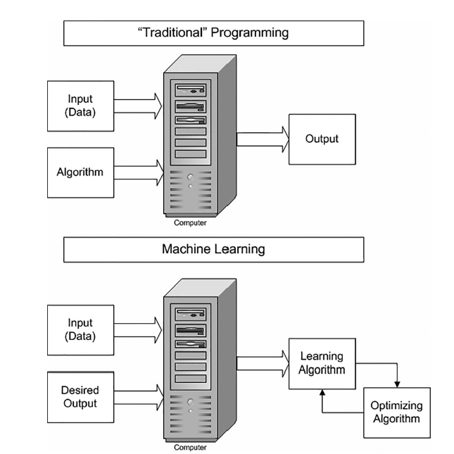
95% accurate — and clinically useless.
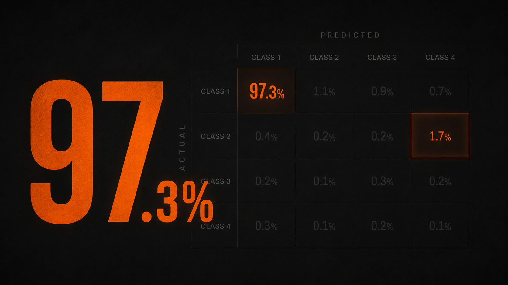
Warning: unbalanced data need balanced metrics
- Accuracy = \(\dfrac{\text{correctly classified}}{\text{total}}\)
- On rare outcomes (\(\sim 5\%\)) the trivial “always-negative” classifier scores ~\(95\%\) accuracy and misses every real case.
- We will need other measures (and other procedures — chapter 04) to do better.
Task · Performance · Experience: that’s the whole machine.
Mitchell’s definition
“A computer program is said to learn from experience (\(E\)) with respect to some class of tasks (\(T\)) and performance measure (\(P\)), if its performance at tasks in \(T\), as measured by \(P\), improves with experience \(E\).”
— Tom Mitchell, Machine Learning, 1997
\(T\) — the task
| Learning problem | Task \(T\) |
|---|---|
| Predict 30-day readmission | classify patients as will / will-not be re-admitted |
| Handwriting recognition | recognise / classify handwritten characters in images |
| Self-driving car | drive from A to B |
| Disease coding from EHR | classify EHR notes by reported disease |
| In-bed patient monitoring | output position + dynamics at any given time |
\(P\) — the performance measure
| Task \(T\) | Performance \(P\) |
|---|---|
| classify readmission yes/no | \(\%\) correctly classified (needs a balanced metric — class imbalance; ch. 4) |
| classify handwritten characters | \(\%\) correctly classified |
| drive A → B | average distance driven before a human intervention |
| classify EHR by disease | \(\%\) of EHRs correctly classified |
| monitor in-bed dynamics | average error on position / dynamics |
\(E\) — the experience (the data)
| Task \(T\) | Experience \(E\) |
|---|---|
| classify readmission | EHR records with known re-admission outcomes |
| recognise handwriting | labelled images of handwritten characters |
| drive A → B | sequence of videos + steering commands from human drivers |
| classify EHR by disease | EHR notes with known disease labels |
| monitor in-bed dynamics | time-series from wearables + bed sensors + ground-truth video |
Where do the labels come from?
Four kinds, in box order
- Supervised (tag) — inputs come with their correct outputs (the labels); the model learns from its errors on them.
- Unsupervised (pattern) — input data has no labels; the model finds patterns / clusters on its own.
- Active (raised hand) — the model queries an oracle (e.g., a clinician) to label the cases it is most uncertain about.
- Reinforcement (trophy) — an agent takes actions and receives rewards; it learns a policy that maximises long-term gain.
You know what it is. But how does it decide?
Pre-hook → chapter 2: classifiers
The simplest learner makes one decision: it draws a line on a chart of features and asks which side a patient falls on.
That line-drawer is a classifier — and it is where the black box opens next.
Exercises
Item 01 — Question
A hospital deploys a model that predicts 30-day readmission from each patient’s EHR. Which statement best captures how this machine-learning system differs from a traditional, rule-based program written for the same task?
- A) In traditional programming an engineer writes the decision rules and the program applies them to data; in machine learning the rules — the model — are learned from data paired with known outcomes.
- B) Machine learning needs no data, whereas a traditional program requires data as input.
- C) A traditional program can only handle numeric inputs, while machine learning is the only approach able to process patient records at all.
- D) Machine learning is guaranteed to be more accurate than any hand-written rule, because learning from data removes human bias.
Item 01 — Solution (write yours)
Item 01 — Solution
Correct: A. The defining difference is the input/output swap. In ordinary software the rules are the input (hand-written) and answers come out; in ML you provide the data and the known answers, and the model — the rule \(Y \simeq f(X)\) — is the output, learned from training data.
Why the distractors are wrong:
- B inverts the dependency: ML is more data-dependent, not less.
- C is a false capability claim: rule-based programs can process records too; data type is not what distinguishes the two approaches.
- D is the “ML is objective / always better” misconception: a model can score 95% accuracy and still be clinically useless on imbalanced data, and it inherits whatever bias is in its training data.
Item 02 — Question
An ICU team wants a system that, at admission, predicts whether a patient will develop sepsis during their ICU stay. They have several years of past ICU admissions, each described by the information available at admission and labelled with whether sepsis later occurred. In their data, only about 4% of admissions developed sepsis.
Frame this as a machine-learning problem by specifying its Task (\(T\)), Performance measure (\(P\)), and Experience (\(E\)).
Balanced accuracy = average of the model’s accuracy within each class. Consider a trivial model that predicts “no sepsis” for every patient. (a) What is its plain accuracy, and its balanced accuracy? (b) Use your answer to explain why balanced accuracy is the more appropriate choice of \(P\).
Item 02 — Solution (write yours)
Item 02 — Solution
Framing
- \(T\): predict, at admission, whether a patient will develop sepsis during the ICU stay — binary classification.
- \(P\): balanced accuracy (rather than plain accuracy).
- \(E\): past ICU admissions labelled with whether sepsis occurred — supervised experience.
The revealing computation
- (a) “Always no-sepsis” model: correct on 96% of patients ⇒ plain accuracy ≈ 96%. Accuracy on sepsis class = \(0\%\); on non-sepsis = \(100\%\). ⇒ Balanced accuracy = (0% + 100%) / 2 = 50%.
- (b) Plain accuracy is inflated by the 96% majority of negatives, so a clinically useless model still scores ≈ 96%. Balanced accuracy weighs the two classes equally; missing the rare class drags it to chance (50%) — honestly revealing the model is useless for the task that matters.
Item 03 — Question
A team builds a model that classifies chest X-rays as normal or abnormal. Labelling is expensive, so: they train the model on a small set of already-labelled X-rays, then let it scan many unlabelled X-rays and select the few it is most uncertain about; a radiologist labels only those, the model is retrained, and the cycle repeats.
Which learning paradigm best describes this set-up?
- A) Supervised learning, because the model is ultimately trained on radiologist-labelled X-rays.
- B) Active learning, because the model repeatedly queries an expert (the oracle) to label the cases it is most uncertain about.
- C) Reinforcement learning, because the model improves over repeated cycles by interacting with its environment.
- D) Unsupervised learning, because the model scans many X-rays that have no labels.
Item 03 — Solution (write yours)
Item 03 — Solution
Correct: B — Active learning.
The defining feature is the loop in which the model itself chooses which unlabelled cases to send to a human oracle for labelling — selective querying is active learning.
Why the distractors are plausible but wrong:
- A — the underlying model is a supervised classifier, but “supervised” alone misses what distinguishes the scenario: the model’s selective request for labels. Active learning is a strategy built on top of supervised learning.
- C — confuses “repeated cycles” with reinforcement learning. RL requires a reward signal guiding actions; here there is no reward, only requested labels.
- D — many X-rays are unlabelled, but the model is trained on labels (just sparingly requested), so it is not unsupervised.
Item 04 — Question
A hospital data team is asked to discover, from routinely collected lab panels, previously unrecognised subgroups (“phenotypes”) of patients with type 2 diabetes — groups nobody has defined in advance.
A colleague argues: “We already have each patient’s ICD diagnostic codes — let’s just use those codes as the group labels and train a supervised classifier.”
- Argue whether using the ICD codes as labels actually achieves the stated goal.
- State which learning paradigm fits the goal, and justify it.
- Under what (different) goal would the colleague’s supervised approach be exactly the right choice?
Item 04 — Solution (write yours)
Item 04 — Solution
The ICD-codes proposal does not achieve the goal. ICD codes are pre-existing, human-defined diagnostic categories — not the previously unrecognised subgroups the task asks to discover. A supervised classifier trained on them would only learn to reproduce labels that already exist; it cannot surface new structure. “Labels available” ≠ “labels that match the goal.”
Unsupervised learning (clustering) fits the goal: discover structure / subgroups in data that carry no labels for the thing being sought (the phenotypes).
The colleague’s supervised approach would be exactly right under a different goal: predicting a patient’s existing ICD diagnosis from their lab panels. There the ICD codes are legitimately the target labels, and assigning new patients to known categories is supervised classification.
Summative — Turn a clinical problem into an ML problem
For each scenario, write its Task (\(T\)), Experience (\(E\)) and the learning paradigm.
- A — 30-day readmission. Flag, at discharge, which inpatients will be re-admitted within 30 days from EHR.
- B — Patient phenotypes. From lab panels of diabetic patients, find data-driven subgroups not predefined.
- C — Adaptive insulin dosing. A controller adjusts each insulin dose from the patient’s glucose response over time.
- D — Disease coding from free text. Classify EHR notes by disease; the model asks the clinician to label the cases it is most uncertain about.
Take-home challenge: propose a quantitative performance measure \(P\) for each — we’ll revisit at chapter 4 (model validation).
Summative — Solution (write yours)
Summative — Solution
| \(T\) (task) | \(E\) (experience) | Paradigm | |
|---|---|---|---|
| A | Discharge: readmitted yes/no | EHRs with outcome labels | supervised |
| B | Find subgroups in lab panels | Lab panels, no labels | unsupervised |
| C | Insulin dose from glucose state | State → action → response stream | reinforcement |
| D | Classify EHR notes by disease | Notes + labels on asked-for cases | active |
Draw the line; count the cost.
It decides with a single line.
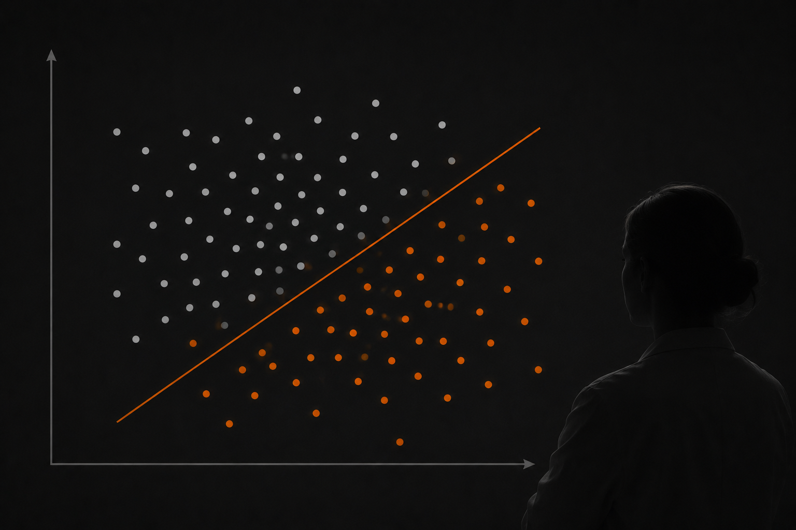
Two outputs: a label, or a number.
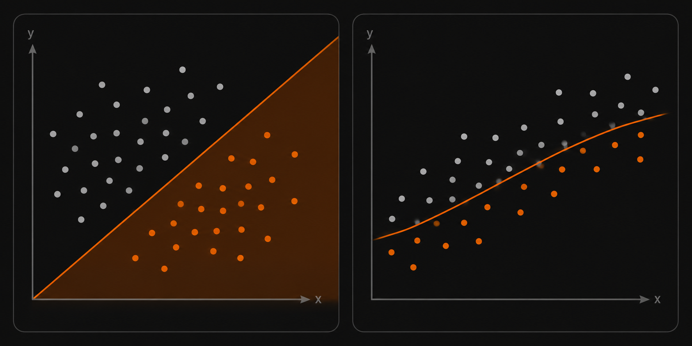
Classification vs regression — the single discriminator
| Output | Lives in | Example | |
|---|---|---|---|
| Classification | a label (discrete) | \(\{1, \ldots, K\}\) | “high-risk or low-risk?” |
| Regression | a value (continuous) | \(\mathbb{R}\) | “predict HbA1c (%) at 6 months” |
No line catches them all.
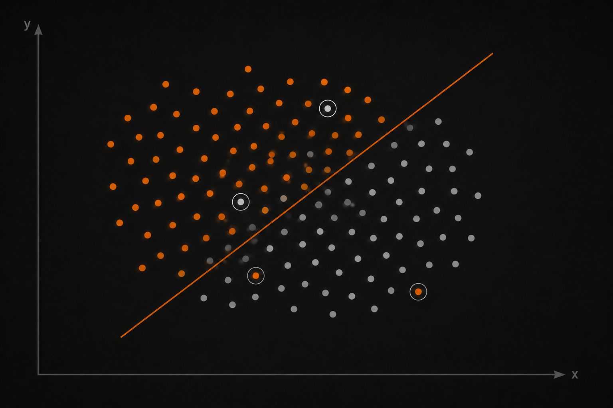
A classifier splits the space into regions.
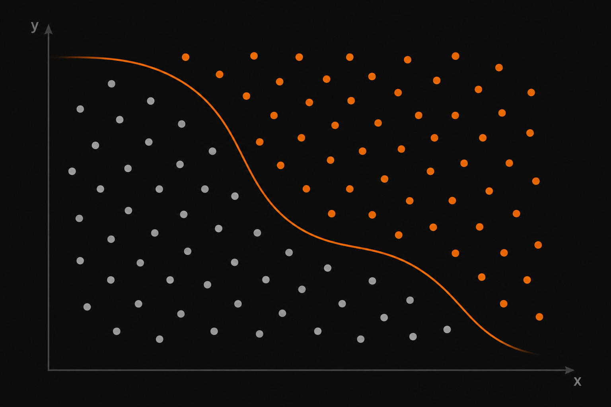
A classifier is a function on the feature space
For features \(X \in \mathbb{R}^d\) and \(K\) classes, a classifier is a function \[f : \mathbb{R}^d \to \{1, \ldots, K\}.\]
- Every point of \(\mathbb{R}^d\) is sent to exactly one class — no gaps, no overlaps.
- The decision regions are the preimages \(f^{-1}(1), \ldots, f^{-1}(K)\).
- The boundary between regions IS the classifier (Obj. 2).
…but the label is usually a thresholded probability
So far we have read a classifier’s output as a hard label. But that label is rarely produced directly: most “classifiers” first estimate a probability, then cut it at a threshold (binary task: \(K = 2\), labels \(\{0,1\}\), \(1 =\) positive):
\[g : \mathbb{R}^d \to [0, 1], \qquad g(x) = \widehat{P}(Y = 1 \mid X = x).\]
\[f_\tau(x) = \begin{cases} 1 & \text{if } g(x) \ge \tau \\ 0 & \text{otherwise,} \end{cases} \qquad \tau = 0.5 \text{ by default.}\]
- The model that is actually fit is the continuous \(g\) — a regression onto \([0, 1]\). The hard label appears only once we pick a threshold \(\tau\).
- One \(g\) therefore spawns a whole family of classifiers \(\{f_\tau : \tau \in [0, 1]\}\) — one per cut, each making different mistakes.
- The habitual \(\tau = 0.5\) is a convention — natural only when the two kinds of error cost the same (and \(g\) is well-calibrated) — not a clinical law: when a missed case costs more than a false alarm, the best cut moves.
So two different things deserve evaluation — the probabilistic model \(g\) itself (threshold-free) and each derived classifier \(f_\tau\). We’ll resolve how at ch. 4 (evaluation metrics).
Count the cost: risk = total loss.
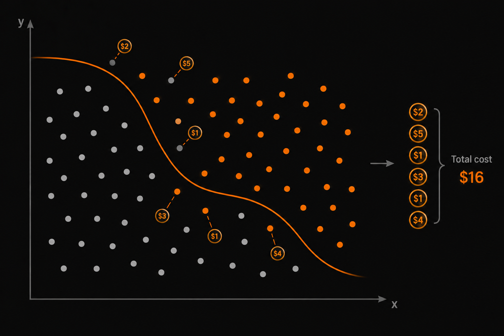
0/1 loss and risk on a sample
0/1 loss — one unit of cost per misclassification:
\[\mathfrak{L}(y, \hat y) = \begin{cases} 1 & \text{if } y \ne \hat y \\ 0 & \text{otherwise.} \end{cases}\]
0/1 risk on a sample — the average loss over the \(n\) patients we have:
\[\widehat{\text{risk}}(f) \;=\; \frac{1}{n} \sum_{i=1}^n \mathfrak{L}\bigl(y_i, f(x_i)\bigr) \;=\; \frac{\#\text{misclassified}}{n}.\]
The lower-risk classifier is the better one on the data we have.
Cheapest mistake found. But who drew it?
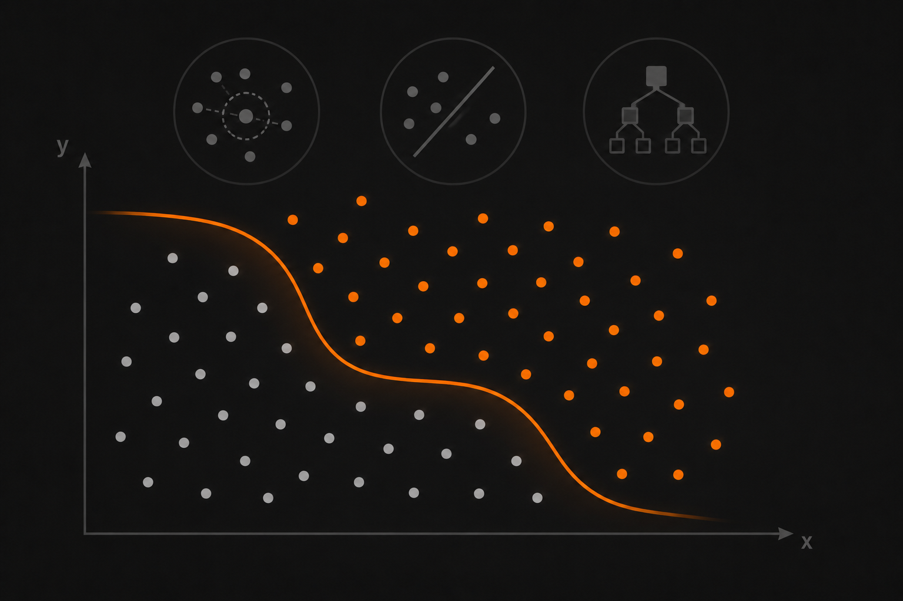
Pre-hook → chapter 3: algorithm examples
You can now judge a boundary by its risk — but you still drew it by hand. How do real algorithms actually find a good line?
Some look at the nearest patients. Some fit a straight cut. Some grow trees and vote.
Those are the concrete classifiers — and they are next.
Exercises
Item 01 — Question
Which one of the following clinical machine-learning tasks is a regression task (rather than classification)?
- A) Predicting whether a patient will be re-admitted within 30 days, from EHR.
- B) Predicting a patient’s HbA1c value six months after starting metformin.
- C) Predicting which of three diabetes subtypes (T1, T2, gestational) a case belongs to.
- D) Predicting whether a chest X-ray shows pneumonia.
Item 01 — Solution (write yours)
Item 01 — Solution
Correct: B — HbA1c value. The output is a continuous numeric value (e.g., \(6.5\%\)). The output lives in \(\mathbb{R}\), not in a finite label set \(\{1, \ldots, K\}\).
Why the distractors are wrong:
- A and D are binary classification: output = label yes/no, not a number.
- C is multi-class classification: output = one of \(K = 3\) subtype labels.
The single discriminator is what the model produces — a label (classification) or a value (regression) — not the data type of the inputs, nor whether an internal probability could be reported.
Item 02 — Question
A clinical screening tool uses fasting glucose \(x\) (mg/dL) and BMI \(y\) (kg/m²) to flag patients as high-risk (\(1\)) or low-risk (\(0\)). The classifier is \(f:\mathbb{R}^2 \to \{0, 1\}\) defined by
\[f(x, y) = \begin{cases} 1 & \text{if } x + 2y > 200 \\ 0 & \text{otherwise.} \end{cases}\]
Three new patients arrive: P1 \((100, 30)\), P2 \((140, 35)\), P3 \((90, 60)\).
- Compute \(f\) for each of P1, P2, P3 — show the arithmetic.
- Sketch the two decision regions of \(f\) on the \((x, y)\) plane.
- Explain why the two regions cover \(\mathbb{R}^2\) with no gaps and no overlaps — and why this is a necessary property of any classifier \(f:\mathbb{R}^2 \to \{0, 1\}\).
Item 02 — Solution (write yours)
Item 02 — Solution
1. Compute \(f\) for each patient.
- P1 \((100, 30)\): \(\;100 + 60 = 160 < 200 \Rightarrow f = 0\) → low-risk.
- P2 \((140, 35)\): \(\;140 + 70 = 210 > 200 \Rightarrow f = 1\) → high-risk.
- P3 \((90, 60)\): \(\;90 + 120 = 210 > 200 \Rightarrow f = 1\) → high-risk.
2. Decision regions. The line \(x + 2y = 200\) passes through \((200, 0)\) and \((0, 100)\), splitting the plane into two half-planes: above-right $= $ high-risk (\(f=1\)); below-left \(=\) low-risk (\(f=0\)).
3. No gaps, no overlaps. \(f\) is a function: every \((x, y) \in \mathbb{R}^2\) goes to exactly one of \(\{0, 1\}\). The regions are the preimages \(f^{-1}(0), f^{-1}(1)\) — their union is the whole plane, their intersection is empty. Saying “\(f\) is a classifier” IS saying “the regions partition \(\mathbb{R}^2\)”.
Item 03 — Question
A binary classifier \(f\) is tested on 10 patients:
| # | True \(Y\) | Predicted \(\hat Y\) | # | True \(Y\) | Predicted \(\hat Y\) |
|---|---|---|---|---|---|
| 1 | high-risk | high-risk | 6 | low-risk | high-risk |
| 2 | low-risk | low-risk | 7 | high-risk | high-risk |
| 3 | high-risk | low-risk | 8 | low-risk | low-risk |
| 4 | low-risk | low-risk | 9 | high-risk | low-risk |
| 5 | high-risk | high-risk | 10 | low-risk | low-risk |
Using the 0/1 loss, what is \(f\)’s 0/1 risk on this sample?
- A) \(0/10\) · B) \(2/10\) · C) \(3/10\) · D) \(7/10\)
Item 03 — Solution (write yours)
Item 03 — Solution
Correct: C (\(3/10\)). Three patients misclassified: #3, #6, #9.
\[\widehat{\text{risk}}(f) = \frac{1}{10} \sum_{i=1}^{10} \mathfrak{L}(y_i, \hat y_i) = \frac{3}{10}.\]
Why the distractors are wrong:
- A (\(0/10\)) confuses most-patients-right with no-errors-at-all.
- B (\(2/10\)) counts only the false negatives (\(\#3, \#9\)) and forgets the false positive \(\#6\). The 0/1 loss is symmetric.
- D (\(7/10\)) is the accuracy / risk inversion: \(7\) is the count of correctly classified; that’s the accuracy, not the risk. We count costs, not wins.
Item 04 — Question
Two clinicians work on the same 10-patient sample. Each built a classifier \(f:\mathbb{R}^2 \to \{0, 1\}\):
- \(f_A\) correctly classifies 7 of 10 (3 misclassified).
- \(f_B\) correctly classifies 8 of 10 (2 misclassified).
Clinician B: “\(f_B\) is better — its 0/1 risk on this sample is lower.” Clinician A: “That is only on these 10 patients. My classifier might do better on a different group.”
- State the 0/1 risk on the sample of each classifier as a fraction.
- Within this chapter’s concepts, whose claim is supported by the available evidence? Justify in 3–5 sentences.
- What kind of information would we need to settle Clinician A’s pushback?
Item 04 — Solution (write yours)
Item 04 — Solution
\(\widehat{\text{risk}}(f_A) = 3/10\); \(\widehat{\text{risk}}(f_B) = 2/10\).
Clinician B’s claim is supported by what this chapter has given us. The chapter provides exactly one criterion: 0/1 risk on the available sample. \(f_B\) (\(2/10\)) is lower-risk than \(f_A\) (\(3/10\)). Clinician A is voicing a hypothesis about patients we don’t have, and within ch. 02 alone there is no number we could compute about patients not in our sample. So B has evidence; A has, at this point, only a hypothesis.
We would need 0/1 risk estimates on patients NOT in the 10-patient sample — a second set of patients with known labels, on which both classifiers can be evaluated independently. Within ch. 02 alone we have no such set: that is exactly the question this chapter cannot yet answer. (That is what ch. 04 will pick up.)
Summative — Draw the boundary, count the cost
Each pair (or breakout room) gets a 2D scatter of ~10 patients on \((x, y) =\) (fasting glucose, BMI), each labelled high-risk / low-risk.
- Draw a single boundary that splits the plane into two regions (one per class).
- Count the misclassified patients → its 0/1 risk on the sample \(= \dfrac{\#\text{misclassified}}{\#\text{total}}\).
- The same patients are also given another task: “predict each patient’s HbA1c value”. Which task — class label or HbA1c value — is classification? Which is regression? Why?
Take-home challenge: the lowest-risk boundary on this sample is not necessarily the best on new patients — why? (We’ll resolve at ch. 4.)
Summative — Solution (write yours)
Summative — Solution
The task on the scatter is classification. Output = a discrete label (high-risk / low-risk) — lives in \(\{0, 1\}\). The HbA1c task is regression: output = a continuous value in \(\mathbb{R}\).
0/1 risk on the sample. Each group’s boundary partitions the plane; count patients on the wrong side; divide by 10. The lower-risk boundary is the better classifier on this sample.
Live signal of mastery. On these patients (not perfectly separable), no boundary reaches risk \(0\). Groups can rank their boundaries by 0/1 risk; the rank is the chapter’s only criterion.
Take-home: whether the lowest-risk boundary on these 10 patients will also be the lowest-risk on patients we haven’t measured is a question this chapter cannot answer — chapter 4 will.
Same data; three algorithms, three boundaries.
Three algorithms, three boundaries — same patients.
Who draws the line — and how?
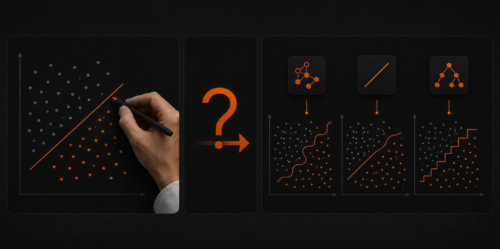
Three families of algorithms
- \(k\)-NN — the training data themselves define the boundary (lazy).
- Linear / SVM — one global cut with the widest margin (and bend the space first if needed: the kernel trick).
- Ensembles / Random Forest — many weak voters; the majority vote beats any single one (as long as each is better than chance).
Each family carries its own prior on what a sensible boundary looks like.
\(k\)-NN: the data themselves decide.
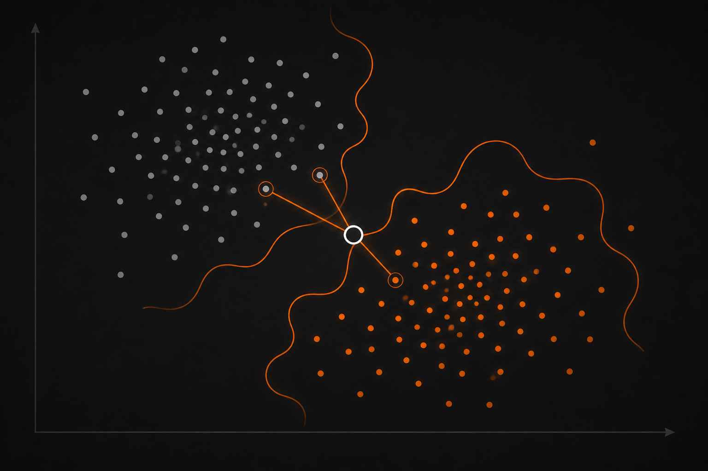
\(k\)-Nearest Neighbor — the recipe
For a new point \(x\):
- Find its \(k\) nearest training points (by some distance metric).
- Take a majority vote among their class labels.
- Assign that class to \(x\).
Rule of thumb in this chapter: \(k = 3\).
The decision regions are defined by the training points themselves — piecewise boundaries that hug each cluster’s edge.
One straight cut. The shape is in the folds.
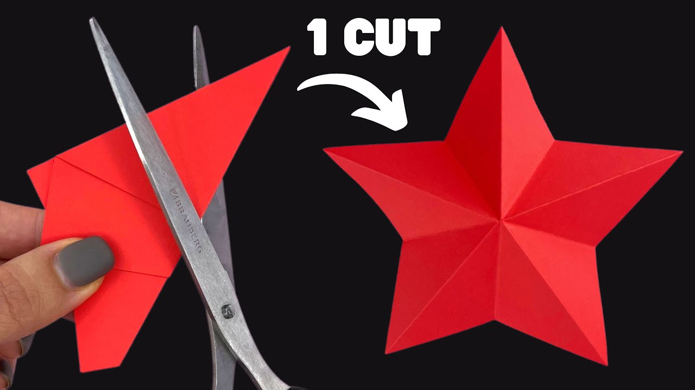
Bend the space, not the algorithm.
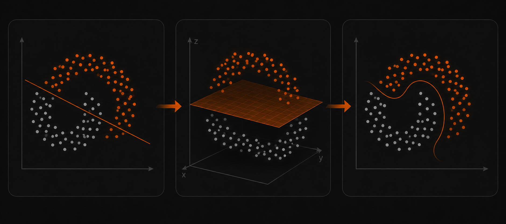
Linear SVM and the kernel trick
Linear SVM: find the widest-margin hyperplane between classes: \[f(x) = \text{sgn}(w^\top x + b), \quad x = (y_1, y_2).\]
When classes are not linearly separable, apply a feature map \(\phi:\mathbb{R}^d \to \mathbb{R}^D\) first: \[\phi(y_1, y_2) = \bigl(y_1^2,\; y_2^2,\; \sqrt{2}\,y_1 y_2\bigr).\]
Then cut with a hyperplane in the \(\phi\)-space; project back as a smooth curve in the original space. (For radially-symmetric data, \((y_1^2, y_2^2)\) alone suffices.)
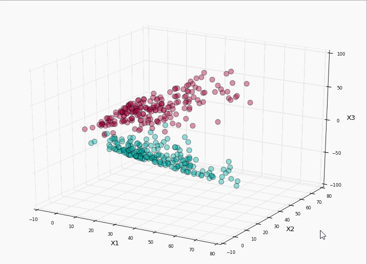
The 2D data lifted into \(\phi\)-space, where a flat cut separates it.
The classifier did not change — what it sees did.
Many weak voters beat one strong.
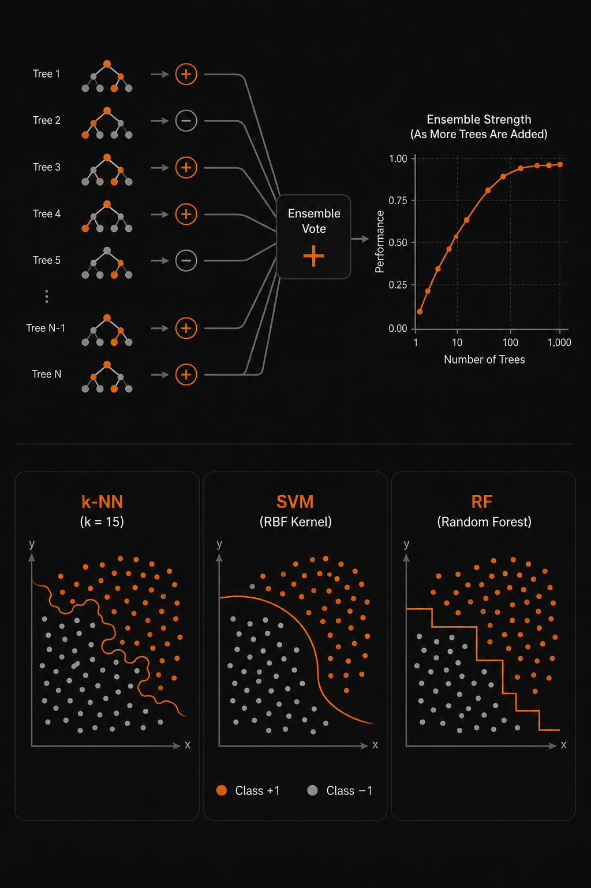
Random Forest and the majority vote
Random Forest = many small decision trees, each trained on a bootstrapped slice of the data, combined by majority vote.
For \(m\) independent weak classifiers each with per-classifier accuracy \(p\):
- if \(p > 0.5\) → vote accuracy goes up toward \(1\) as \(m\) grows;
- if \(p < 0.5\) → vote accuracy goes down toward \(0\) as \(m\) grows.
Voting amplifies whichever direction \(p\) points. Hence the \(p > 0.5\) requirement.
(Real forests only approximate independence — bootstrapping \(+\) random feature subsets de-correlate the trees; the clean “\(\to 1\)” is the idealisation.)
Three families, four boundary shapes
| Algorithm | Shape of the boundary it produces |
|---|---|
| \(k\)-NN | piecewise wiggly curve hugging the training points |
| Linear SVM | one straight cut |
| Kernel SVM | smooth curved boundary (a hyperplane in \(\phi\)-space, projected back) |
| Random Forest | axis-aligned staircase of small rectangles (voted) |
Same data, different priors → different region shapes.
Perfect on training. On a new patient?
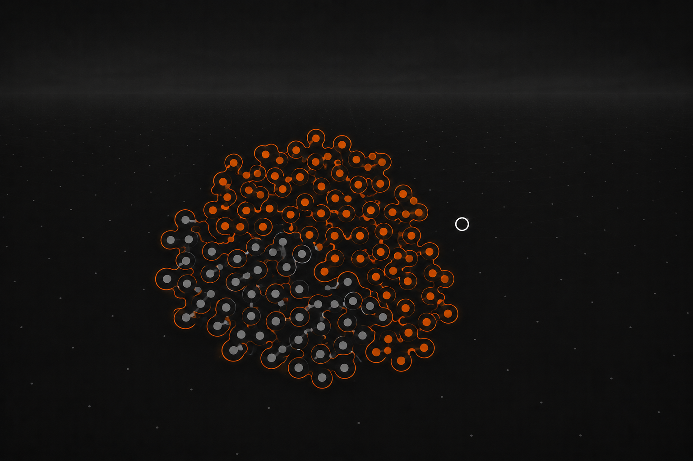
Pre-hook → chapter 4: model selection
Three reasonable boundaries on the same twelve patients.
Among them, \(k\)-NN with \(k=1\) never misclassifies a single training patient — its risk on the sample is exactly \(0\). And that very perfection is what dooms it on new patients.
How do we tell good fits from fakes? That is model selection — next.
Exercises
Item 01 — Question
A classifier produces a decision boundary that can be described as: a wiggly, piecewise curve that hugs the training data closely, with small detours around individual points. The regions look as if carved by the training points themselves.
Which algorithm family most likely produced this boundary?
- A) \(k\)-Nearest Neighbor (with small \(k\)).
- B) Support-Vector Machine, linear (non-kernel).
- C) Random Forest.
- D) Support-Vector Machine with a non-linear kernel.
Item 01 — Solution (write yours)
Item 01 — Solution
Correct: A — \(k\)-Nearest Neighbor (small \(k\)).
The defining clue is the boundary follows the data. \(k\)NN labels by the majority class of the \(k\) nearest training neighbours, so the regions are defined by the training points themselves — a piecewise, data-hugging boundary.
Why the distractors are wrong:
- B (linear SVM): a single straight line — the opposite of wiggly.
- C (RF): an axis-aligned staircase of small rectangles — blocky, not smoothly wiggly.
- D (kernel SVM): a smooth curve, not piecewise.
Item 02 — Question
Eight patients in 2D: red on the unit circle \(y_1^2 + y_2^2 = 1\) (A,B,C,D), blue on the circle \(y_1^2 + y_2^2 = 9\) (E,F,G,H) — concentric.
A non-linear feature map is given: \[\phi(y_1, y_2) \;=\; (y_1^2,\; y_2^2) \;=\; (X_1, X_2).\]
- Argue why no straight line in \((y_1, y_2)\) separates red from blue (1–2 sentences).
- Tabulate \((X_1, X_2) = \phi(y_1, y_2)\) for the 8 patients.
- State a linear rule in \((X_1, X_2)\) — of the form “red if \(aX_1 + bX_2 < c\)” with specific \(a, b, c\) — that separates the two classes perfectly. Verify on one red, one blue.
- The classifier did not change. What changed, and why is that enough?
Item 02 — Solution (write yours)
Item 02 — Solution
1. Red and blue are concentric: every direction from origin contains both a red (distance 1) and a blue (distance 3) patient. Any straight line has both classes on the same side.
2. \(\phi(y_1, y_2) = (y_1^2, y_2^2)\): all reds map to \(\{(1,0), (0,1)\}\); all blues map to \(\{(9,0), (0,9)\}\). Note all reds satisfy \(X_1 + X_2 = 1\), all blues \(X_1 + X_2 = 9\).
3. Linear rule: “red if \(X_1 + X_2 < 5\), blue otherwise” (any \(c \in (1, 9)\) works). Verify: A \(\to (1, 0) \to 1 < 5\) ✓ red; E \(\to (9, 0) \to 9 \ge 5\) ✓ blue.
4. The data changed — same 8 patients re-coordinatised by \(\phi\) — exposing distance-from-origin info hidden in \((y_1, y_2)\). The classifier is still a straight cut. The boundary \(X_1 + X_2 = 5\) in \(\phi\)-space ↔︎ circle \(y_1^2 + y_2^2 = 5\) in the original space — the boundary the data actually wanted.
Item 03 — Question
Two ensembles, each \(100\) weak classifiers combined by majority vote (assume independence).
- Configuration X: per-classifier accuracy \(p = 0.55\).
- Configuration Y: per-classifier accuracy \(p = 0.45\).
Which statement about the majority-vote accuracy is correct?
- A) X’s vote is more accurate than \(0.55\), and Y’s vote is less accurate than \(0.45\).
- B) Both votes are more accurate than their single classifiers — more is always better.
- C) X’s vote \(\approx p = 0.55\) — averaging gives the average.
- D) Y’s vote is more accurate than X’s, because \(p = 0.45\) leaves more room for correction.
Item 03 — Solution (write yours)
Item 03 — Solution
Correct: A. The majority-vote accuracy concentrates as \(m\) grows:
- if \(p > 0.5\) → vote accuracy goes up toward \(1\);
- if \(p < 0.5\) → vote accuracy goes down toward \(0\).
So X (\(p = 0.55\)) → vote \(\gg 0.55\), close to \(1\). Y (\(p = 0.45\)) → vote \(\ll 0.45\), close to \(0\).
Why the distractors are wrong:
- B misses the \(p > 0.5\) requirement. Y’s vote actually worsens.
- C confuses majority vote with arithmetic average. The vote returns the most-voted label, not the probability \(p\).
- D is the “underdog correction” intuition — wrong by symmetry: voting amplifies whatever signal is there.
Item 04 — Question
A 2D scatter shows two classes forming interlocked half-moons (clearly non-linearly separable: every straight line crosses both classes).
“Which algorithm should I use on these data, and why?”
Using only this chapter’s language — shape of decision regions each family produces — argue in two parts:
- Propose one algorithm family that would FIT. Name its boundary shape and argue why that shape matches the data.
- Identify one algorithm family that would NOT fit. Name its shape and argue why it cannot match. Use the 0/1 risk on the sample (ch. 02) to name the concrete consequence.
Item 04 — Solution (write yours)
Item 04 — Solution
Part 1 — Any one of these fits, provided the shape is named:
- Kernel SVM → smooth curve (hyperplane in \(\phi\)-space, projected back); can enclose a half-moon.
- \(k\)-NN → piecewise wiggly curve defined by the training points; naturally follows half-moon clusters.
- Random Forest → axis-aligned staircase voted by many trees; carves half-moons into correctly-coloured rectangles (binomial vote concentrates as long as each tree has \(p > 0.5\)).
Part 2 — Linear (non-kernel) SVM does NOT fit. Boundary: a single straight cut. On interlocked half-moons, no straight line can put each class on one side. Concrete consequence: high 0/1 risk on the sample — many patients on the wrong side, average 0/1 loss is large. The mismatch is structural.
Summative — Three algorithms, one dataset
Three groups, one scatter (non-linearly separable). Each group is assigned one algorithm card and a one-sentence question:
- Group A — \(k\)-NN (\(k = 3\)). Sketch the boundary. Q: “What happens to the boundary if \(k\) is doubled?”
- Group B — SVM (pick linear or kernel). Sketch. Q: “This data is not linearly separable — do you pick linear or kernel, and which feature map?”
- Group C — Random Forest (~50 trees). Sketch. Q: “5 trees, each \(p = 0.6\), majority vote — more or less accurate than 1 tree with \(p = 0.6\)? Why?”
All sketches go on a 3-column board (\(k\)NN · SVM · RF), in-person + remote side by side.
Summative — Solution (write yours)
Summative — Solution
| Family | Shape on the board | One-liner answer |
|---|---|---|
| \(k\)-NN (\(k{=}3\)) | piecewise, hugging individual points | larger \(k\) → smoother (averages more neighbours) |
| SVM | if linear: straight line + must say why it fails ; if kernel: smooth curve + name \(\phi\) | pick kernel (e.g. \(\phi(y_1, y_2) = (y_1^2, y_2^2, \sqrt{2}\,y_1 y_2)\)) |
| RF (~50 trees) | axis-aligned staircase | more accurate — majority vote concentrates on correct answer when \(p > 0.5\) |
Live signal of mastery: the class can point at the board and say — unprompted — “same data, different algorithms, different region shapes → different carvings”.
Take-home challenge: among these three, which one will hold on patients never seen? — Chapter 4.
Decisions cost data; hold the test.
Perfect on training. Wrong on the first new patient.
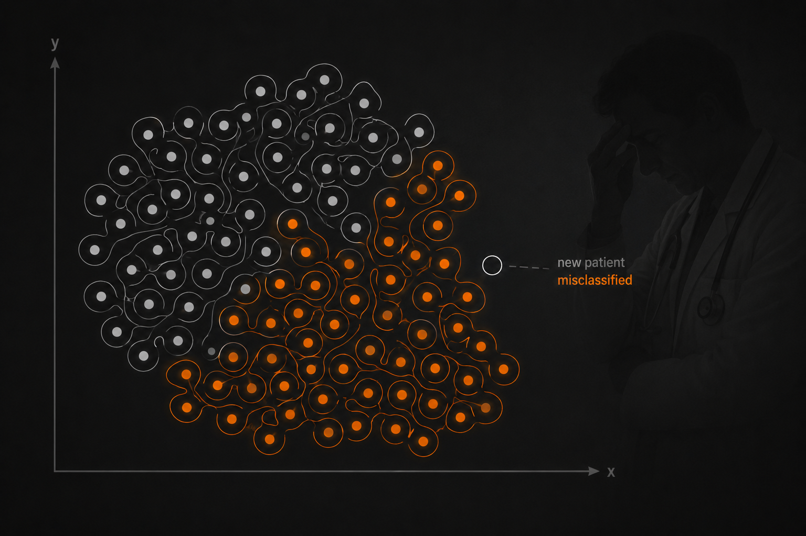
Fits the seen; misses the unseen.
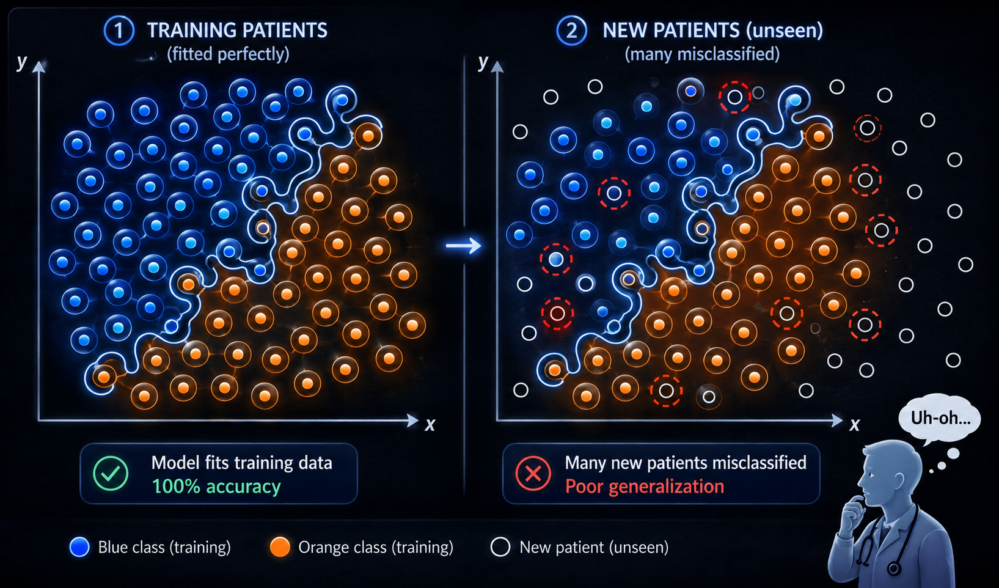
What does training error actually measure?
Training error = how well the model fits the data it was trained on.
It does not tell us how the model will do on patients we have not measured.
The more flexible the model, the better it can fit any specific training set — at the cost of fitting that one set rather than the underlying pattern.
Training error falls. New-data error eventually rises.
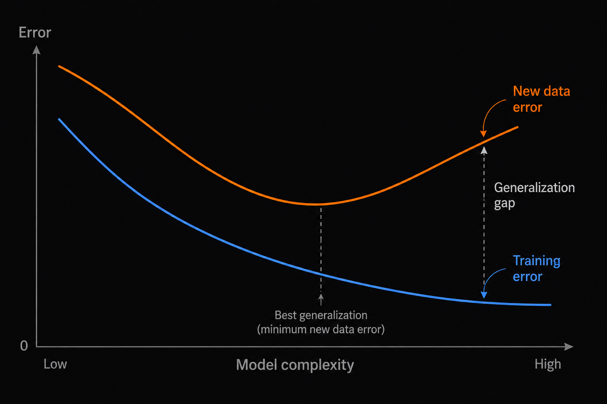
Overfitting — the signature
A model is overfitting when:
- its training error is low (it has memorised the training sample), and
- its error on new data is much higher (the gap is large).
It has captured idiosyncrasies of the sample, not the underlying signal.
The opposite failure — underfitting — is when both errors are high: the model is too rigid to capture even the training data.
Aside — Which error? A quick metric tour
For a binary classifier, the confusion matrix counts four outcomes:
| predicted \(+\) | predicted \(-\) | |
|---|---|---|
| actual \(+\) | TP | FN |
| actual \(-\) | FP | TN |
From it, the most-used metrics:
- Accuracy \(= \dfrac{TP + TN}{TP + TN + FP + FN}\) — overall correct rate.
- Balanced accuracy \(= \dfrac{1}{2}\!\left(\dfrac{TP}{TP + FN} + \dfrac{TN}{TN + FP}\right)\) — avoids the majority-class trap on imbalanced data.
- Sensitivity (recall, TPR) \(= \dfrac{TP}{TP + FN}\) — of the actual positives, how many caught.
- Specificity (TNR) \(= \dfrac{TN}{TN + FP}\) — of the actual negatives, how many spared.
- Precision (PPV) \(= \dfrac{TP}{TP + FP}\) — of those flagged positive, how many really are.
Aside — Threshold-free: AUC-ROC vs AUC-PR
Most classifiers output a score \(g\) (often a probability — ch. 2’s \(g\)); the threshold \(\tau\) turns it into a label \(f_\tau\). Sweeping the threshold traces two curves:
- ROC curve — sensitivity vs \(1 - \text{specificity}\) across thresholds. Its area, AUC-ROC \(\in [0, 1]\) (\(0.5 =\) random, \(1 =\) perfect), is the probability that a random positive scores higher than a random negative.
- PR curve — precision vs recall. Its area, AUC-PR, is more informative when the positive class is rare (its baseline is the prevalence, not \(0.5\)).
Rule of thumb: AUC-ROC when classes are roughly balanced; AUC-PR under heavy imbalance (rare disease, fraud, anomaly detection).
Every decision spends data.
The contamination principle
Every time you take a decision based on a number from a dataset, that number is no longer a valid estimate.
Concretely:
- Use validation error to choose between models → that validation error is spent as a future estimate.
- Use test error to choose (even just to pick a winner among candidates) → the test set is spent.
The only honest number is one that was not used to decide anything.
Three sets, one job each — and the test stays untouched.
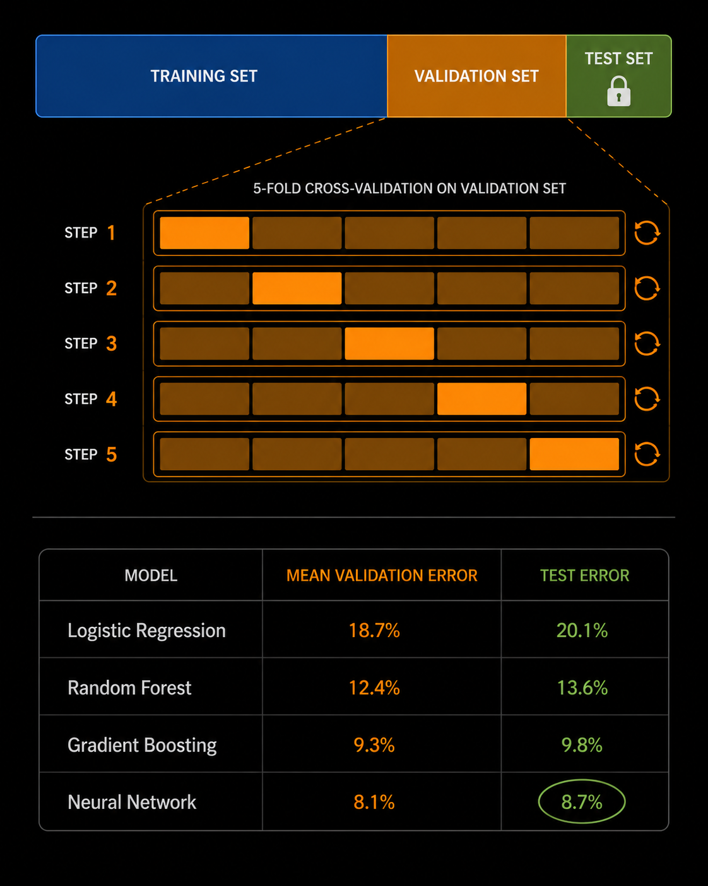
Train / Validation / Test — one role each
| Subset | Role | Used to |
|---|---|---|
| Training | fit | learn the model’s parameters |
| Validation | choose | compare candidate models / hyperparameter settings |
| Test | confirm | estimate final performance on truly unseen data |
The same data cannot play two roles. Choosing a model on a set spends that set’s number as a future estimate.
\(K\)-fold cross-validation — the recipe
The validation step, done practically:
- Split the (non-test) data into \(K\) equal blocks.
- For \(k = 1, \ldots, K\): train on the other \(K - 1\) blocks; estimate error on block \(k\).
- Average the \(K\) per-fold error rates → the CV error.
Standard \(K \in [5, 10]\): smaller \(K\) → each fit sees a smaller fraction of the data (high bias); larger \(K\) → smaller folds (high variance).
The CV error estimates the prediction error of the chosen model on unseen patients.
Now I trust the number. But how complex can the model be?
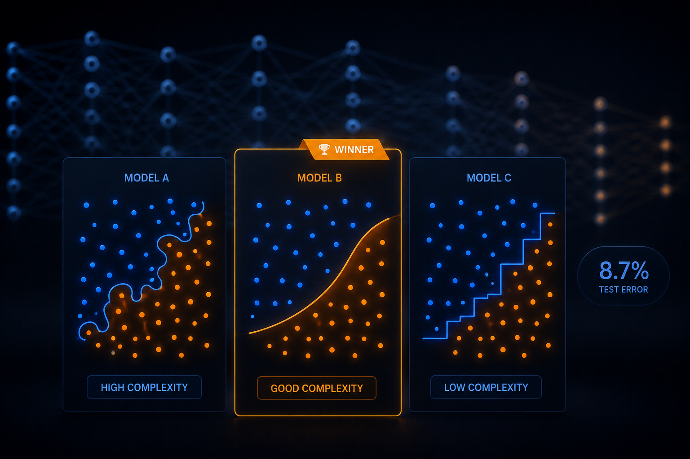
Aside — What did the model learn? Global importance (VIMP)
After validating that a model predicts well, a second question follows: which features is it relying on?
Variable importance — permutation-based (VIMP):
- Measure the validated model’s error \(E\).
- Permute the values of feature \(X_j\) across patients — this breaks any signal in \(X_j\), keeping everything else fixed.
- Re-measure the error \(E_j\). The importance of \(X_j\) is \(E_j - E\): how much performance drops when \(X_j\) is scrambled.
Born with random forests, but works for any fitted model (model-agnostic).
Aside — Why this prediction? Local explanations (SHAP)
VIMP tells you which features matter on average. SHAP tells you how each feature contributed to a single patient’s prediction.
- Borrowed from cooperative game theory (Shapley values, 1953): each feature is a “player”; its SHAP value is its fair share of the prediction’s deviation from the average — like splitting a bill by what each guest actually ordered.
- For one patient: a positive SHAP value pushes the prediction up; a negative one pushes it down. Contributions are additive.
- Aggregated across patients, SHAP also yields a global view that is consistent with the local explanations.
Model-agnostic; standard tooling for tree ensembles today — and the deep nets and LLMs of later chapters.
Pre-hook → chapter 5: deep learning
You now have a discipline that works for any classifier you can build: fit, cross-validate, hold out a test set, report the honest number.
But what if the model itself can be made arbitrarily complex — a network of millions of artificial neurons that can, in principle, fit anything?
The cross-validation discipline still holds. But the architecture of the model becomes a new question. Deep neural networks — next.
Exercises
Item 01 — Question
Four classifiers evaluated on the same task with 5-fold CV:
| Classifier | Training error | CV error |
|---|---|---|
| \(M_1\) | \(25\%\) | \(28\%\) |
| \(M_2\) | \(0\%\) | \(32\%\) |
| \(M_3\) | \(48\%\) | \(50\%\) |
| \(M_4\) | \(7\%\) | \(9\%\) |
Which one shows the clearest signature of overfitting?
- A) \(M_1\) · B) \(M_2\) · C) \(M_3\) · D) \(M_4\)
Item 01 — Solution (write yours)
Item 01 — Solution
Correct: B — \(M_2\).
The overfitting signature: low training error + much higher error on new data (large gap). \(M_2\) has \(0\%\) training error but \(32\%\) CV — memorised the sample, not the signal.
Why the distractors are wrong:
- A (\(M_1\), \(25/28\%\)) — no overfit: small gap, both moderate.
- C (\(M_3\), \(48/50\%\)) — underfitting (the opposite): both errors high and near chance. Model too rigid.
- D (\(M_4\), \(7/9\%\)) — healthy fit: both low and close. Low training error alone is not overfit.
Item 02 — Question
A classifier evaluated on \(20\) patients with 5-fold CV (4 patients per fold):
| Fold | Misclassified | Out of | Per-fold error |
|---|---|---|---|
| 1 | 1 | 4 | \(25\%\) |
| 2 | 1 | 4 | \(25\%\) |
| 3 | 2 | 4 | \(50\%\) |
| 4 | 0 | 4 | \(0\%\) |
| 5 | 2 | 4 | \(50\%\) |
- Compute the 5-fold CV error rate. Show your formula.
- State what number the CV error rate estimates (1–2 sentences).
- Describe what would change with \(K = 10\) on the same 20 patients: (a) the procedure, (b) one trade-off.
Item 02 — Solution (write yours)
Item 02 — Solution
1. CV error = average of per-fold rates: \[\text{CV error} = \frac{25\% + 25\% + 50\% + 0\% + 50\%}{5} = 30\%.\] Equivalent: \((1+1+2+0+2)/20 = 6/20 = 30\%\).
2. It estimates the prediction error of the classifier on unseen patients drawn from the same population. Not the training error (fit on seen data), not yet the test error (reserved for after the choice).
3. With \(K = 10\) on the same 20 patients:
- (a) \(10\) folds of \(2\) patients each; train on \(18\), estimate on \(2\), average the \(10\) rates.
- (b) Trade-off: more training data per fold → less bias but smaller folds → noisier per-fold rates → more variance. Standard \(K \in [5, 10]\) balances both.
Item 03 — Question
A team uses 5-fold CV on training+validation to compare four candidates (\(M_A, M_B, M_C, M_D\)). \(M_B\) wins with CV error \(18\%\). They have a separate test set untouched since day 1. What is the correct next step?
- A) Report \(M_B\)’s CV error (\(18\%\)) as expected performance on new patients — no further evaluation needed.
- B) Retrain \(M_B\) on train+val combined; evaluate once on the held-out test set; report that test error.
- C) Re-run 5-fold CV with \(K = 10\) to confirm the \(18\%\); then report it.
- D) Pool train+val+test into one combined dataset; report \(M_B\)’s average error on the pool.
Item 03 — Solution (write yours)
Item 03 — Solution
Correct: B. \(M_B\)’s CV error (\(18\%\)) is the very number that chose \(M_B\) among four candidates. By the contamination principle, that number is no longer unbiased — it is optimistically biased (the smallest of four CV errors). The test set is the only untouched dataset.
Why the distractors are wrong:
- A — classic contamination violation. \(18\%\) has been spent.
- C — re-running CV doubles down on the same set; the test set remains the only fresh source.
- D — uses the test set as training data, destroying its role. Worst of all.
Item 04 — Question
A colleague compares 3 ML techniques (\(k\)-NN, SVM-kernel, RF), each with its own hyperparameters. Their procedure:
| Day | Action |
|---|---|
| 1 | Split: train + validation + test (locked away on day 1). |
| 2 | For each technique, use 5-fold CV on train+val to tune its hyperparameters. |
| 3 | Retrain each tuned candidate on train+val combined. |
| 4 | Evaluate the 3 candidates on the test set; record each one’s test error. |
| 5 | Pick the technique with the lowest test error; report that test error. |
“Each technique was tuned correctly with CV. Test set was never touched during training. What could be wrong?”
- Find the exact flaw: where (and how) is the contamination principle violated?
- Propose the correct procedure and explain why it has no flaw.
Item 04 — Solution (write yours)
Item 04 — Solution
1. Flaw at Steps 4–5. The test set has been used to choose among the three retrained techniques. Picking the technique with the lowest test error among three is a decision based on test-set numbers — the contamination principle rules it out. The reported test error of the winner \(M_\star\) is no longer unbiased: it is the minimum of three test errors, optimistically biased. Each technique’s within-technique CV tuning at Step 2 was correct, but a second selection step has been hidden inside Steps 4–5, turning the test set into a between-technique validation set.
2. Correct procedure. Do all selection at the validation step — both within and between techniques:
- For each technique, CV-tune its hyperparameters on train+val.
- Use the same CV to compare the 3 tuned candidates and pick a single \(M_\star\) (the technique-and-setting with lowest CV error overall).
- Retrain only \(M_\star\) on train+val combined.
- Evaluate \(M_\star\) once on the held-out test set; report.
When the test set is consulted, no decision is open: it is used purely to estimate.
Summative — Catch the overfitter
Four \(k\)-NN candidates (\(k = 1, 5, 15, 51\)) tuned on \(100\) patients with 5-fold CV:
| Model | \(k\) | Training error | 5-fold CV error |
|---|---|---|---|
| \(M_A\) | 1 | \(0 / 100\) (\(0\%\)) | \(30 / 100\) (\(30\%\)) |
| \(M_B\) | 5 | \(12 / 100\) (\(12\%\)) | \(18 / 100\) (\(18\%\)) |
| \(M_C\) | 15 | \(20 / 100\) (\(20\%\)) | \(22 / 100\) (\(22\%\)) |
| \(M_D\) | 51 | \(40 / 100\) (\(40\%\)) | \(42 / 100\) (\(42\%\)) |
For each group:
- Identify the overfitter and say why (which signature?).
- Pick the winner by CV error.
- Why is the winner’s CV error not a trustworthy estimate of its performance on new patients? What data would you use?
- Assign the three subsets: training is used to , validation (5-fold CV) is used to , test is used to ___.
Summative — Solution (write yours)
Summative — Solution
1. Overfitter: \(M_A\). Signature: \(0\%\) training + \(30\%\) CV (30-point gap). \(k=1\) memorises every training point — perfect on training, bad on new patients.
2. Winner by CV: \(M_B\) (\(18\%\)). Lowest CV error.
3. The CV error has been used to choose \(M_B\) among four candidates. Contamination principle: that number is now optimistically biased, not unbiased. Use the separate held-out test set (untouched in selection) to get a trustworthy number.
4. Roles:
| Subset | Used to |
|---|---|
| TRAINING | fit the model’s parameters |
| VALIDATION (5-fold CV) | choose among candidate models / hyperparameters |
| TEST | estimate final performance on truly unseen patients |
Take-home: this chapter’s discipline answers both prior cliff-hangers — “but on a different group of patients?” (ch. 02) and the \(1\)NN paper-thin wrap (ch. 03). The architecture question opens at chapter 5.
Stack logistic units; descent finds weights.
A million weights. No verdict explained.
One neuron is one logistic — with \(g\) free to be anything.
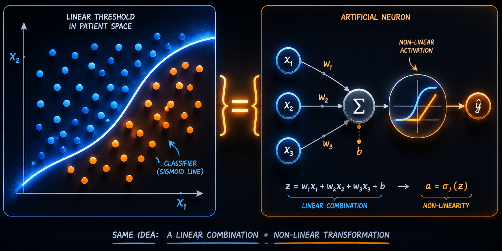
The artificial neuron
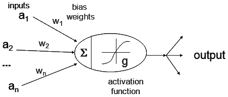
Given inputs \(a = (a_1, \ldots, a_n)\) and weights \(w = (w_1, \ldots, w_n)\):
\[\text{out} = g\!\left(\sum_{i=1}^{n} a_i \, w_i\right)\]
The chapter 2 logistic regression is the special case \(g = \sigma\) (sigmoid). The artificial neuron frees \(g\) — any non-linear and differentiable function will do.
Activation functions \(g\) — common choices
The chapter requires \(g\) to be non-linear and differentiable (almost everywhere). Three canonical choices:
- ReLU (Rectified Linear Unit): \(g(z) = \max(0, z)\) — the field’s workhorse since the 2010s.
- Sigmoid: \(g(z) = \sigma(z) = \dfrac{1}{1 + e^{-z}}\) — the same one from chapter 2 logistic regression.
- Hyperbolic tangent: \(g(z) = \tanh(z) = \dfrac{e^z - e^{-z}}{e^z + e^{-z}}\).
All three satisfy the two requirements (ReLU is differentiable almost everywhere — the single point \(z = 0\) is handled in practice with the sub-gradient \(0\)).
This is a deep network. Count them: twelve… or is it seventeen?!
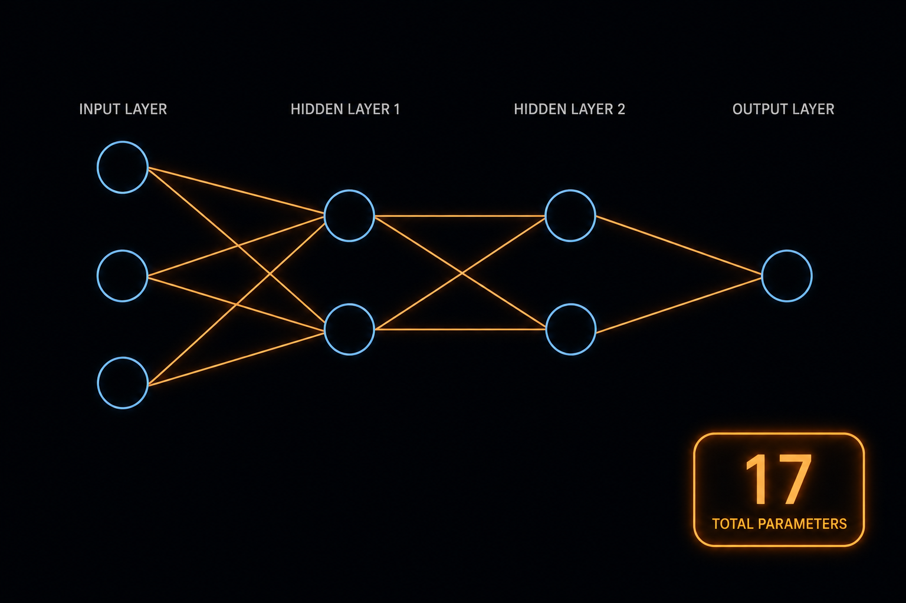
Composition — a fully-connected (MLP) network
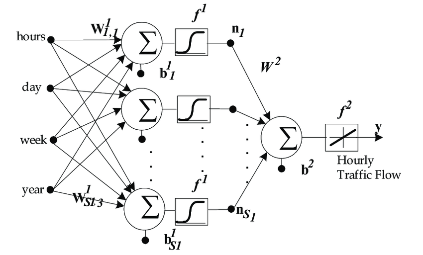
Stack neurons into layers; feed the outputs of one layer as the inputs of the next:
\[a^{[l]} = g^{[l]}\!\left(W^{[l]} \, a^{[l-1]}\right)\]
where \(W^{[l]}\) is the weight matrix of layer \(l\).
A toy network \(3 \to 2 \to 2 \to 1\) (no biases) has:
\[\underbrace{3 \cdot 2}_{\text{layer 1}} + \underbrace{2 \cdot 2}_{\text{layer 2}} + \underbrace{2 \cdot 1}_{\text{layer 3}} = \mathbf{12}\ \text{weights}.\]
Twelve. Drawable on a napkin. (The badge says 17 — that’s the \(12\) weights \(+\) \(5\) biases; here we count weights.)
Weights are coordinates. Loss is the height. Walk downhill.
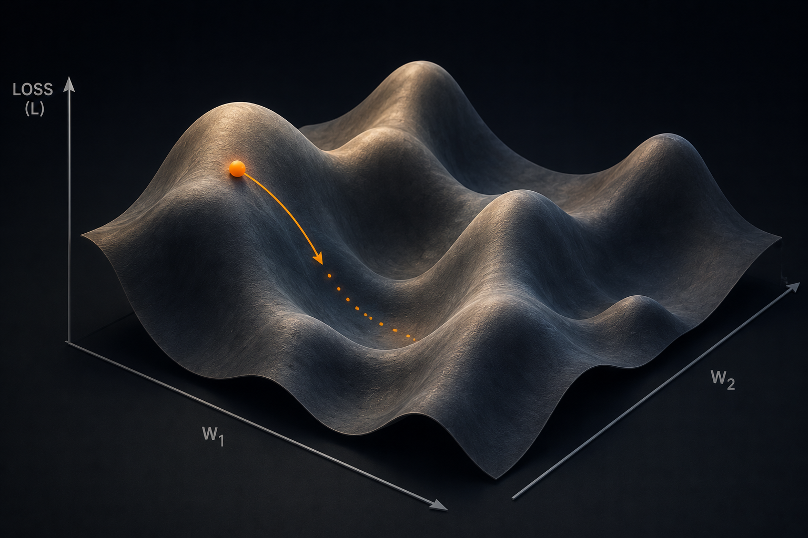
Gradient descent — the training loop
For a given training set, each combination of weights \(W\) has a loss \(L(W)\) — the empirical risk of ch. 2, now read as a function of \(W\):
- \(W\) = coordinates in \(\mathbb{R}^d\) (where \(d\) = number of weights).
- \(L(W)\) = the height of the loss surface at \(W\).
Gradient descent: walk downhill, one small step at a time:
\[W \leftarrow W - \eta \, \nabla_W L(W).\]
- \(\nabla_W L(W)\) = direction of steepest ascent; we go against it.
- \(\eta\) = learning rate = how big a step we take.
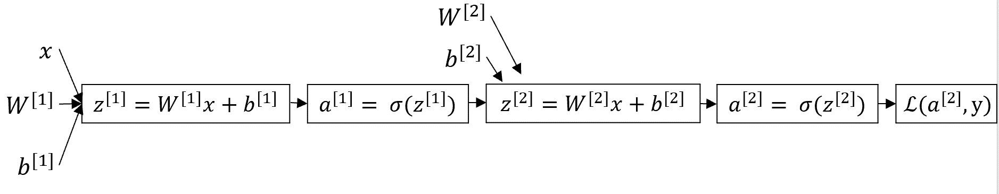

Why must \(g\) be non-linear and differentiable?
Both requirements have operational meaning for the training procedure:
- Non-linear \(g\) → the stack of layers is more than one big linear map. Were each \(g\) linear, the whole stack would collapse to \((W^{[3]} W^{[2]} W^{[1]})\,x = W x\) — one matrix multiplication, no matter how many layers. No “deep”.
- Differentiable \(g\) → the gradient \(\nabla_W L(W)\) exists at every \(W\). Otherwise: no direction to step in, and gradient descent has nothing to do. No “learning”.
The two together: a curved loss landscape with a slope at every point. That’s what makes descent possible.
Forward pass on the left. Descent step on the right. Both yours to read.
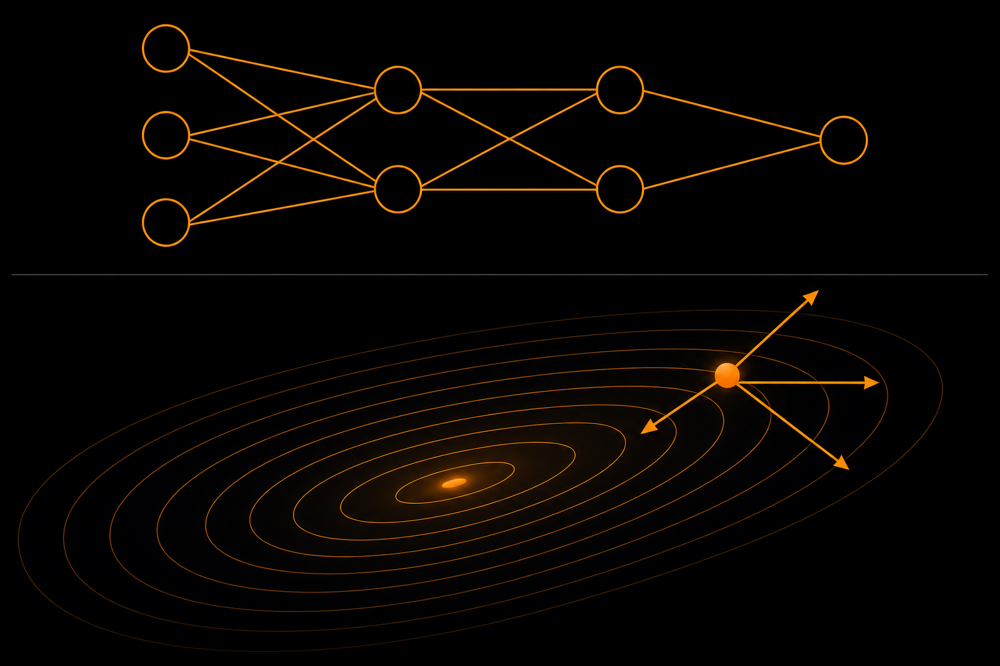
It’s not magic — it’s just bigger. But what about a chest X-ray?
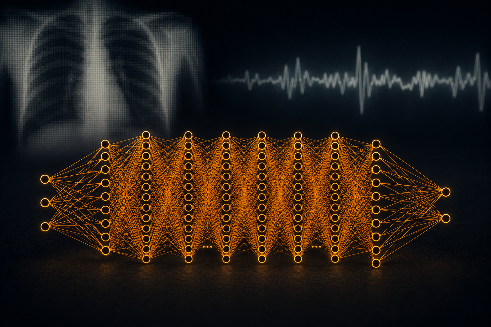
Pre-hook → chapter 6: unstructured data
Elena’s stack of neurons can chew on any vector of inputs — age, BMI, a lab value — and learn from it.
But clinical data does not arrive as a tidy vector of length \(12\):
- A chest X-ray is a \(1024 \times 1024\) image — feed it raw to a fully-connected layer, and the first weight matrix alone holds over a million parameters per neuron.
- A blood-pressure trace is a sequence, varying in length — where do you even start?
The same logistic-stack-plus-descent machinery can survive the jump — but only with a clever rule about which weights are shared. That rule is the subject of chapter 6: convolutional networks for images, recurrent networks for sequences.
Exercises
Item 01 — Question
A clinical colleague tells you over coffee: “an artificial neuron is just a fancy version of logistic regression.” Which one identifies the single mathematical change that turns a logistic regression into an artificial neuron?
- A) The sigmoid activation is replaced by any non-linear, differentiable function \(g\) (ReLU, tanh, sigmoid as one special case). The weighted-sum structure \(\sum_i a_i w_i\) is unchanged.
- B) The input features are squared (\(a_i^2\) instead of \(a_i\)), so the neuron can model curved boundaries.
- C) The neuron carries many weight vectors in parallel instead of one, so it produces multiple outputs.
- D) The activation is removed entirely, so the neuron computes the bare \(\sum_i a_i w_i\) — a purely linear version of logistic regression.
Item 01 — Solution (write yours)
Item 01 — Solution
Correct: A. An artificial neuron is \(\text{out} = g(\sum_i a_i w_i)\) where \(g\) is non-linear and differentiable. The logistic regression of ch. 2 is the special case \(g = \sigma\). The artificial neuron frees \(g\) to any function satisfying the two requirements.
Why the distractors are wrong:
- B = kernel trick of ch. 3 (non-linearity in the features, not the activation). Different mechanism.
- C = a layer of neurons, not a single neuron. The student has confused the atom with the molecule.
- D removes \(g\) entirely → purely linear → stack collapses to one linear map. The worst answer: it is exactly what the chapter’s requirement on \(g\) forbids.
Item 02 — Question
Network \(3 \to 4 \to 2 \to 1\) (no biases): \(3\) inputs · hidden 1 of \(4\) neurons (ReLU) · hidden 2 of \(2\) neurons (ReLU) · \(1\) sigmoid output.
- Write the forward pass in matrix form, \(a^{[l]} = g^{[l]}(W^{[l]} a^{[l-1]})\), with explicit dimensions of each \(W^{[l]}\).
- Count the total weights, decomposed by layer.
- Given \(a^{[0]} = (1,\ 2,\ 0)\) and \[W^{[1]} = \begin{pmatrix} 1 & 0 & -1 \\ 0 & 1 & 1 \\ -1 & 1 & 0 \\ 2 & -2 & 0 \end{pmatrix},\] compute \(a^{[1]} = \text{ReLU}(W^{[1]} a^{[0]})\), showing \(z^{[1]} = W^{[1]} a^{[0]}\) first.
Item 02 — Solution (write yours)
Item 02 — Solution
1. Forward pass:
- \(a^{[1]} = \text{ReLU}(W^{[1]} a^{[0]})\), \(W^{[1]} \in \mathbb{R}^{4 \times 3}\), \(a^{[1]} \in \mathbb{R}^4\).
- \(a^{[2]} = \text{ReLU}(W^{[2]} a^{[1]})\), \(W^{[2]} \in \mathbb{R}^{2 \times 4}\), \(a^{[2]} \in \mathbb{R}^2\).
- \(a^{[3]} = \sigma(W^{[3]} a^{[2]})\), \(W^{[3]} \in \mathbb{R}^{1 \times 2}\), \(a^{[3]} \in \mathbb{R}\) — scalar output \(\hat{y}\).
2. Weight count: \(3 \cdot 4 + 4 \cdot 2 + 2 \cdot 1 = 12 + 8 + 2 = \mathbf{22}\).
3. Pre-activation \(z^{[1]} = W^{[1]} a^{[0]} = (1,\ 2,\ 1,\ -2)\). Apply ReLU element-wise: \(a^{[1]} = (1,\ 2,\ 1,\ \mathbf{0})\) ← the \(-2\) is killed by the non-linearity.
Item 03 — Question
A toy neural network has 2 weights, \(w_1, w_2\). At the current weights \[W_{\text{now}} = (3,\ 1)\] the gradient is \[\nabla_W L(W_{\text{now}}) = (2,\ -4).\] Training uses gradient descent with learning rate \(\eta = 0.5\).
After one update step, the new weight vector \(W_{\text{next}}\) is:
- A) \((2,\ 3)\) · B) \((4,\ -1)\) · C) \((1,\ 5)\) · D) \((5,\ -3)\)
Item 03 — Solution (write yours)
Item 03 — Solution
Correct: A. \[\begin{aligned} W_{\text{next}} &= W_{\text{now}} - \eta \, \nabla_W L \\ &= (3,\ 1) - 0.5 \cdot (2,\ -4) \\ &= (3,\ 1) - (1,\ -2) \;=\; (2,\ 3). \end{aligned}\]
Why the distractors are wrong:
- B = sign-flip → gradient ascent, walks uphill (increases the loss).
- C = forgot \(\eta\) → direction is right (downhill), but the step size is wrong. A step too big can overshoot the minimum, oscillate, or diverge. \(\eta\) controls how far you move.
- D = both errors at once. Sign wrong + step too big.
Summative — Open the box: \(3 \to 2 \to 2 \to 1\)
Network: \(3 \to 2 \to 2 \to 1\) (no biases), hidden = ReLU, output = sigmoid. The diagram you’ll work on:
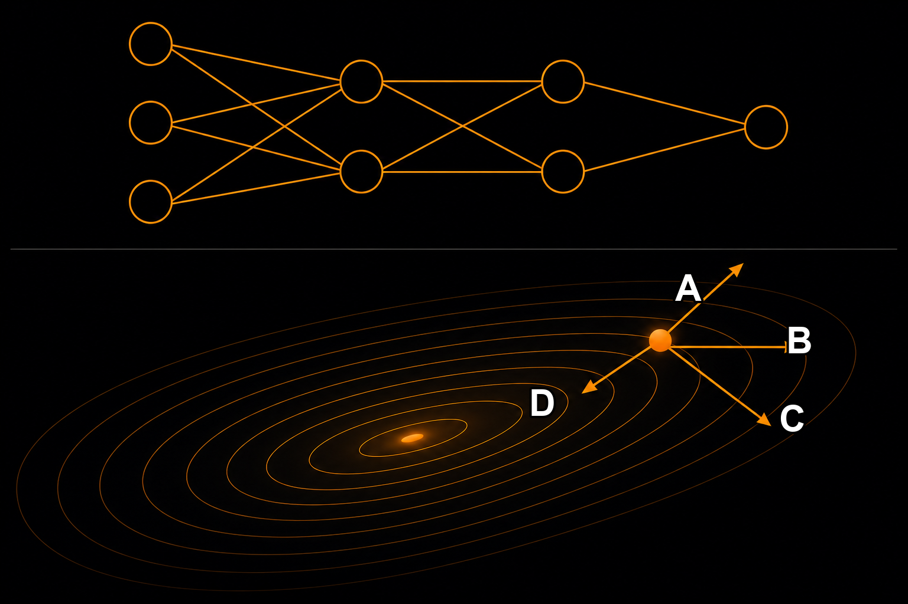
On the network (top half of the board):
Write the forward pass equations layer by layer, \(a^{[l]} = g^{[l]}(W^{[l]} a^{[l-1]})\).
Count the total weights — show \(\square + \square + \square = ?\).
On the loss-landscape contour map (bottom half):
Circle the arrow \(A / B / C / D\) in the steepest-descent direction; justify in one sentence (what makes it the right one — and what’s wrong with each of the other three).
One sentence on \(g\): the two properties it must have, and why each matters for (iii).
Two live polls: “Total weights?” (\(8 / 12 / 17 / 24\)) · “Steepest descent step?” (\(A / B / C / D\)).
Summative — Solution (write yours)
Summative — Solution
(i) Forward pass: \[a^{[1]} = \text{ReLU}(W^{[1]} a^{[0]}),\quad a^{[2]} = \text{ReLU}(W^{[2]} a^{[1]}),\quad a^{[3]} = \sigma(W^{[3]} a^{[2]}).\]
(ii) Weight count: \(3 \cdot 2 + 2 \cdot 2 + 2 \cdot 1 = 6 + 4 + 2 = \mathbf{12}\).
(iii) Anti-gradient direction — perpendicular to the local loss contour and pointing toward the minimum. The loss decreases fastest along \(-\nabla_W L\). Why the other three arrows fail: perpendicular-uphill = the gradient itself (sign-flip, ascent); tangent to the contour = moves along the same loss level (perpendicular \(\ne\) descent); oblique at \(\sim 45°\) = does decrease the loss, but not at the maximum rate — gradient descent specifically asks for the steepest one.
(iv) \(g\) must be non-linear (so the stack does not collapse to one linear map) and differentiable (so \(\nabla_W L\) exists at every \(W\) and descent has a direction to take).
Take-home: a deep network is a composition of generalised logistic units, trained by gradient descent on a loss landscape. The black box is big, not sealed — Elena can read its parts.
Match the structure; share the weights.
Twelve weights worked. Then the image arrived.
Same lesion, different place. Same beat, far apart.
Two data types, two structural priors
Spatial data — a 2D grid, single channel
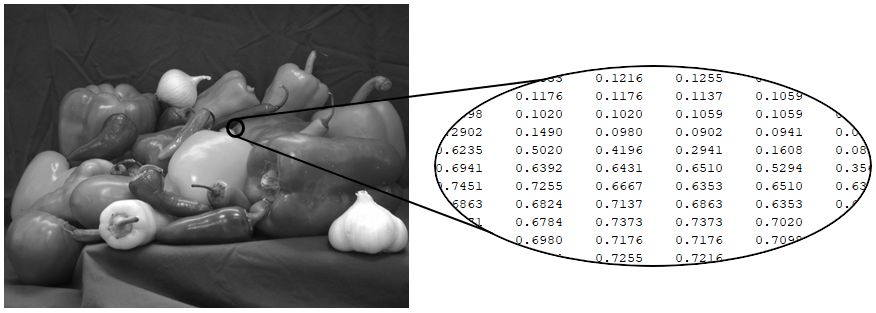
A chest X-ray, a CT slice, a histology tile — a \(2\)D matrix \(X \in \mathbb{R}^{H \times W}\) where the same edge or lesion can appear at different positions of the field of view.
Prior: translation equivariance.
Sequential data — a 1D ordered stream
An ECG trace, a clinical note, a heart-rate stream — a sequence \(x^{<1>}, x^{<2>}, \ldots, x^{<T_x>}\) where the position \(t\) carries meaning (before / after).
Prior: order.
\(5\,017\,600\) versus \(9\). Same image, two architectures.
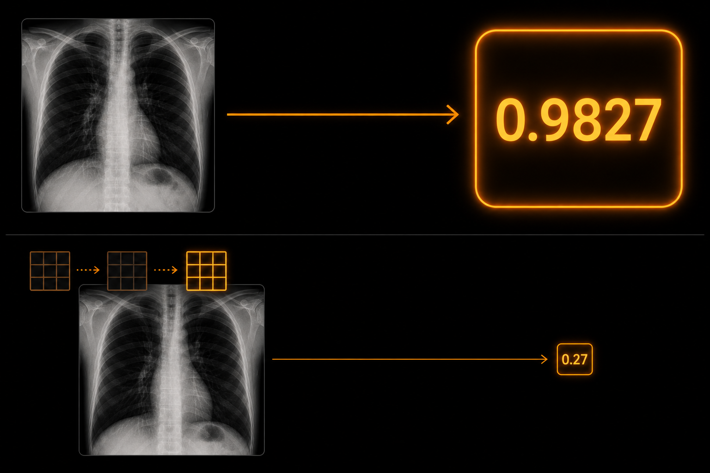
Fully-connected on a chest X-ray — back of the envelope
A \(224 \times 224\) grayscale image fed raw to a fully-connected layer with \(100\) hidden units:
\[|W^{(\text{FC})}| \;=\; 224 \times 224 \times 100 \;=\; 50\,176 \times 100 \;=\; 5\,017\,600 \text{ weights.}\]
For a single hidden layer. On a \(1024 \times 1024\) full-resolution X-ray: \(\sim 10^{8}\) weights — orders of magnitude more parameters than any clinical dataset has labelled patients.
A single \(3 \times 3\) convolutional kernel — by contrast — has \(3 \times 3 = 9\) weights for the whole layer, regardless of image size.
One trick. Two axes. Share the weights.
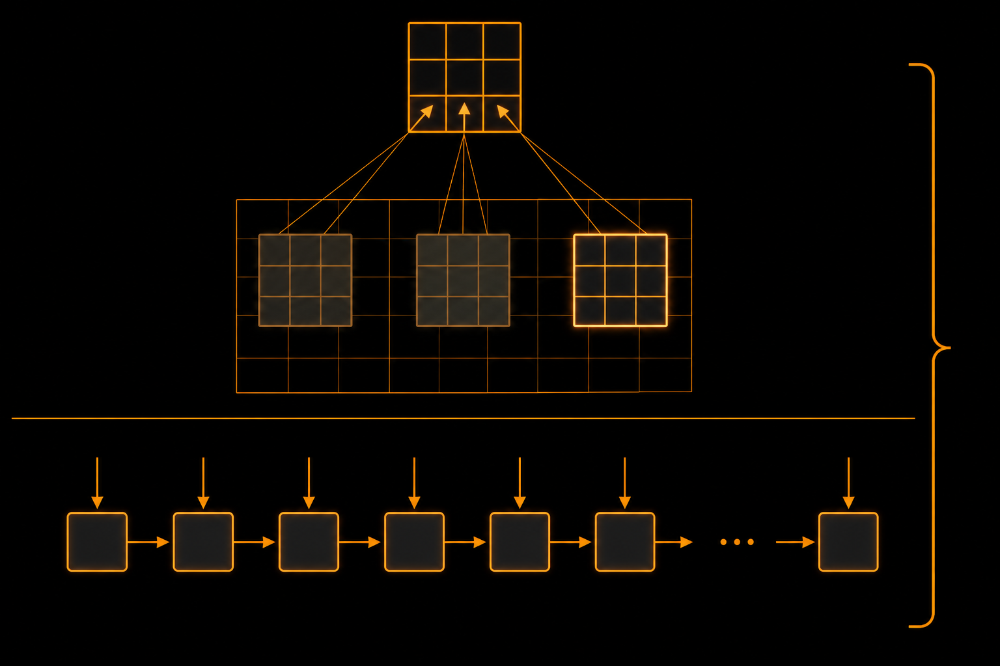
CNN — share across space

A small kernel \(K \in \mathbb{R}^{k \times k}\) (typically \(3 \times 3\) → \(9\) weights) is slid across the input image. At every position \((i, j)\):
\[F_{ij} = g\!\left(\sum_{u=1}^{k}\sum_{v=1}^{k} K_{uv}\, X_{i+u-1,\, j+v-1}\right).\]
The same \(K\) at every position.
Two operational consequences:
Weight count: \(9\) weights for the whole layer, independent of image size — vs \(\sim 10^{4}\)–\(10^{6}\) for a fully-connected layer on the same input.
Translation equivariance: the kernel that learned to detect an edge detects it wherever it appears (true invariance follows after pooling) — the geometric prior is encoded in the architecture, not learned from data.
CNN — typical deep stack
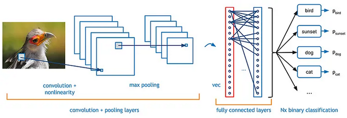
A real CNN stacks many kernels (one per feature), in many layers — but each kernel is small and shared across space. The total parameter count stays modest even when the network is “deep”.
RNN — share across time
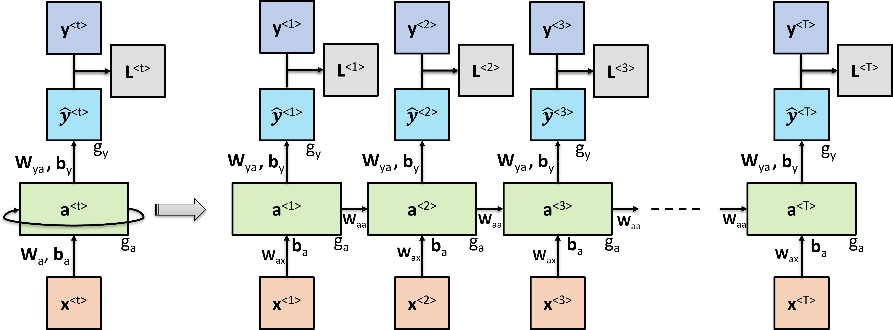
At every position \(t = 1, \ldots, T_x\):
\[a^{<t>} = g\!\left(W_{aa}\, a^{<t-1>} + W_{ax}\, x^{<t>} + b_a\right)\]
\[y^{<t>} = g'\!\left(W_{ya}\, a^{<t>} + b_y\right)\]
The same matrices \(W_{aa}, W_{ax}, W_{ya}\) at every position \(t\).
Two operational consequences:
Parameter count is independent of \(T_x\) — the same \(W\) matrices process a \(5\,000\)-sample ECG and a \(5 \times 10^{5}\)-sample one.
Memory — because \(a^{<t>}\) depends on \(a^{<t-1>}\), the hidden state at \(t\) carries, in principle, the network’s record of everything it has read so far.
Same engineering move — two axes of the data
| Axis | Architecture | What gets shared | Headline weight count |
|---|---|---|---|
| (none) | MLP | nothing | \(5\,017\,600\) on \(224 \times 224 \times 100\) hidden |
| Space | CNN | one kernel \(K\) | \(9\) for a \(3 \times 3\) layer (any image size) |
| Time | RNN | \(W_{aa}, W_{ax}, W_{ya}\) | \(170\) for \(n_a = 10,\ n_x = 5,\ n_y = 2\) (any \(T_x\)) |
Right tool for the wrong tensor.
Atoms unchanged. Only the rule of repetition. One more time?
Pre-hook → chapter 7: LLMs & Transformers
The RNN reads one position at a time — fine on an ECG, where the rhythm is local.
But a discharge letter: the meaning of “no” at position \(42\) depends on “but” at position \(5\). The signal must propagate through \(37\) intermediate hidden states — each one a chance to fade.
Is there a network in which every position sees every other position directly, without the sequential bottleneck?
That is the question of chapter 7: attention, and the architecture built around it — the Transformer.
The atoms still don’t change. Only the rule of repetition does — one more time.
Exercises
Item 01 — Question
You are building a deep model to detect atrial fibrillation from a single-lead ECG with \(T_x = 5\,000\) samples. Which architecture is the canonical choice, and what is the reason?
- A) CNN — because the irregular RR-interval pattern is a local shape that can occur anywhere in the trace, and a kernel slid over the input would detect it everywhere.
- B) RNN — because the order of the samples carries clinical meaning (rhythm = pattern over time), and the recurrent update propagates a hidden state \(a^{<t-1>} \to a^{<t>}\) that encodes order.
- C) MLP on the flat \(5\,000\)-vector — because an MLP can approximate any function of a vector input with enough hidden units.
- D) MLP after PCA to \(50\) components — because reducing dimensionality removes the time-axis problem.
Item 01 — Solution (write yours)
Item 01 — Solution
Correct: B. The chapter’s Obj. 1 says: sequential single-information → RNN, because the recurrent update propagates a hidden state from \(t-1\) to \(t\) — the order of samples is explicitly encoded in the architecture.
Why the distractors are wrong:
- A = practical-answer trap. \(1\)D-CNN often works well on short ECG segments, but does not introduce the new dispositive of the chapter (memory across time via hidden state).
- C = “MLP universal approximator”. True in the limit but ignores that MLP has no built-in notion of order.
- D = PCA on a flat \(5\,000\)-vector is a linear projection that mixes samples from different times into the same component. The time axis is not managed — it is erased.
Item 02 — Question
Chest X-ray as \(X \in \mathbb{R}^{64 \times 64}\) (\(4\,096\) pixels). Two architectures:
- Architecture A: one fully-connected output neuron on the raw image (no bias).
- Architecture B: one \(3 \times 3\) convolutional kernel slid with stride \(1\), no padding, no bias.
How many weights does A need? Show the count.
How many weights does B need? One sentence on why the count is not \(9 \times (\text{spatial positions})\).
Now the image scales to \(1024 \times 1024\). Write the new weight counts for both. One sentence on the operational consequence.
Item 02 — Solution (write yours)
Item 02 — Solution
(i) \(|W^{(A)}| = 64 \times 64 = \mathbf{4\,096}\) weights — one weight per input pixel.
(ii) \(|W^{(B)}| = 3 \times 3 = \mathbf{9}\) weights. The count is not \(9 \times (\text{positions})\) because the same kernel is reused at every spatial position — weight sharing across space.
(iii) At \(1024 \times 1024\): A \(\to 1\,048\,576\) weights (quadratic in resolution); B \(\to 9\) weights (constant, kernel size is independent of image size). Operational consequence: A is not trainable on any clinical dataset (more parameters than patients); B is.
Item 03 — Question
RNN on a multi-channel bedside monitor: \(x^{<t>} \in \mathbb{R}^4\) (HR, BP, SpO2, temp), \(a^{<t>} \in \mathbb{R}^{20}\), \(y^{<t>} \in \mathbb{R}^3\). Recurrence \(a^{<t>} = g(W_{aa}\, a^{<t-1>} + W_{ax}\, x^{<t>} + b_a)\), output \(y^{<t>} = g'(W_{ya}\, a^{<t>} + b_y)\). Ignore biases. Session length: \(T_x = 2\,000\) time steps.
How many weights does the network have to learn, and does this count depend on \(T_x\)?
- A) \(80\) weights, depends on \(T_x\).
- B) \(80\) weights, does NOT depend on \(T_x\).
- C) \(540\) weights, does NOT depend on \(T_x\).
- D) \(540 \times 2\,000 = 1\,080\,000\) weights, depends on \(T_x\).
Item 03 — Solution (write yours)
Item 03 — Solution
Correct: C. Decomposition matrix by matrix:
\[|W_{aa}| = 20 \times 20 = 400, \quad |W_{ax}| = 20 \times 4 = 80, \quad |W_{ya}| = 3 \times 20 = 60.\]
Total: \(400 + 80 + 60 = \mathbf{540}\) weights. Independent of \(T_x\) — weight sharing across time: the same three matrices at every position \(t\).
Why the distractors are wrong:
- A = counted only \(W_{ax}\) + unrolled fallacy. Two misconceptions.
- B = scaling concept right, count wrong (forgot \(W_{aa}\) + \(W_{ya}\)). Partial credit response.
- D = unrolled-MLP fallacy: \(540 \times 2\,000 = 1\,080\,000\) is exactly the parameter explosion the RNN was designed to avoid.
Item 04 — Question
A colleague proposes this design for predicting in-hospital mortality within \(24\)h:
“Each patient: \(24\) hours of \(3\) signals (HR, MAP, SpO2) at \(1\) Hz \(\to\) length-\(86\,400\) time series each. I concatenate the three signals into a flat vector of \(86\,400 \times 3 = 259\,200\) values and feed it to a fully-connected network with \(100\) hidden units in the first layer. The network is deep, so it should find any pattern. Cohort: \(5\,000\) patients.”
Identify the structural problems of this design using chapter \(06\) material. A complete answer names at least two distinct problems, each justified with one concrete number or one concrete reference to the chapter’s principle.
Propose an alternative architecture that fixes them. Name the prior it encodes that the MLP cannot, and give an order-of-magnitude estimate of the first-layer parameter count.
Item 04 — Solution (write yours)
Item 04 — Solution
(i) Three structural problems:
- Parameter explosion (Obj. 2): \(259\,200 \times 100 = 25\,920\,000\) weights for the first layer alone — \(\sim 5\,000\times\) more parameters than the cohort has patients. The network will memorise, not generalise.
- Loss of temporal order (Obj. 3): the flat vector erases the time axis. A pre-mortality blood-pressure trajectory is a pattern over time — invisible to an MLP that treats sample \(1\) and sample \(86\,400\) as interchangeable spreadsheet columns.
- Loss of multi-channel structure (Obj. 1): concatenating three physiologically-correlated channels collapses them into unrelated columns — the architecture respects neither of the data’s two structural axes (time, channel).
(ii) Proposal: an RNN reading the multi-channel signal as a sequence of \(3\)-dim inputs — with hidden state \(a^{<t>} \in \mathbb{R}^{32}\), parameters \(|W_{aa}| + |W_{ax}| \approx 32^2 + 32 \cdot 3 \approx 10^{3}\) weights (vs \(25.9 \times 10^{6}\) for the MLP). The recurrent update encodes order; weight sharing across time makes the count independent of \(T_x\). (A \(1\)D-CNN with multi-channel input is an equally complete answer.)
Summative — Right tool for the wrong tensor
Three clinical data cards on the shared board:
Card A — Chest X-ray \(224 \times 224\) grayscale · pneumonia y/n?
Architecture: ____
Card B — ECG trace \(T_x = 5\,000\) samples · AFib y/n?
Architecture: ____
Card C — Tabular \(18\) pre-op features (age, BMI, eGFR, …) · 30-day mortality y/n?
Architecture: ____
Below Card A, fill the weight-count table (per single output neuron, no bias): FC layer on \(224 \times 224\) = ___ ; single \(3 \times 3\) conv kernel = ___ .
Beside Card B, fill the recurrent equation: \(a^{<t>} = \,\) ___ .
Two live polls: Card B architecture (CNN / RNN / MLP / “depends”) · Card A FC weight count (\(9 / 224 / 50\,176 / 150\,528\)).
Summative — Solution
Card A → CNN (translation invariance, local pattern preserved); Card B → RNN (order, memory via hidden state); Card C → MLP (no structure to preserve).
Card A weight count: FC = \(224 \times 224 = \mathbf{50\,176}\); conv = \(3 \times 3 = \mathbf{9}\). Why so few? The same kernel is reused at every position — weight sharing across space.
Card B recurrent equation: \(a^{<t>} = g\!\left(W_{aa}\, a^{<t-1>} + W_{ax}\, x^{<t>} + b_a\right)\). Why does the parameter count not grow with \(T_x\)? The same matrices are reused at every position \(t\) — weight sharing across time.
Take-home. The architecture is chosen by the data’s structure; CNN and RNN are MLPs constrained to respect that structure; the constraint mechanism is the same trick (weight sharing) applied to two different axes.
Every token attends every; pre-train, fine-tune.
The most famous box of her career — and she had never opened it.
Position \(1\) to position \(T_x\) — through every step between.
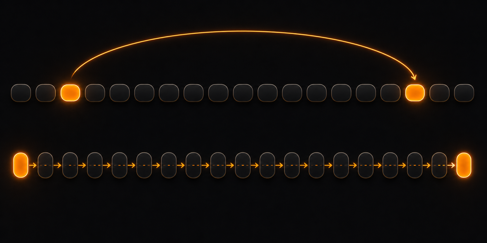
Sentence S — a clinical long-range dependency
“The patient denies a history of penicillin allergy, however the chart from \(2019\) that the resident finally located this morning explicitly contradicts him.”
To answer “is the patient allergic to penicillin?” the model must connect denies (early in the sentence) with contradicts (late in the sentence) — a dependency that spans the sentence.
RNN — every position needs every previous one
The RNN of ch. 6 propagates the dependency through the recurrence
\[a^{<t>} = g\!\left(W_{aa}\, a^{<t-1>} + W_{ax}\, x^{<t>} + b_a\right) \qquad \text{for } t = 1, \ldots, T_x.\]
Position \(t\) cannot be computed until \(t-1\) has been computed — the loop is serial. The trace of denies must travel through every intermediate word until it reaches contradicts: \(T_x - 1\) occasions to fade, and zero parallelism on the GPU.
Every token sees every other — in one shot.
Self-attention — the formula in one line
Each token is projected into three vectors — a query \(Q\), a key \(K\), a value \(V\). Self-attention computes
\[\text{attention}(Q, K, V) \;=\; \text{softmax}\!\left(\dfrac{Q K^{\top}}{\sqrt{d_k}}\right) V.\]
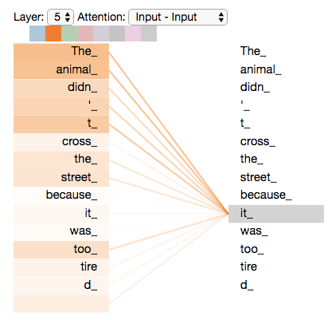
- \(Q K^{\top}\) is a \(T_x \times T_x\) table of all pairs of positions at once.
- The softmax normalises each row into weights.
- \(V\) recombines the tokens by those weights.
- The dependency between position \(1\) and position \(T_x\) is one entry \((Q K^{\top})_{T_x,\,1}\) — one operation away.
Read it backwards: three engineering choices + one UI choice.
Chat G·P·T — Transformer
The architecture of the \(2017\) paper “Attention is all you need” — a stack of self-attention layers, in which every token attends every other token in parallel.
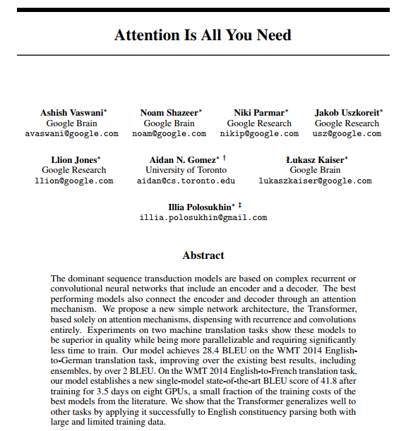

Chat G·P·T — Pre-trained
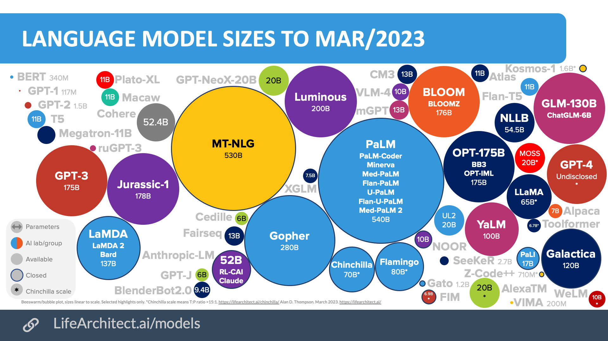
The model has already learned the general statistics of language by reading a massive generic corpus — on the order of every published book + a substantial fraction of the public web — before it sees any user task.
Chat G·P·T — Generative
At inference, the model produces output one token at a time by sampling from \(p(\text{next token} \mid \text{prompt} + \text{tokens so far})\), then appending that token to the input and asking again. Autoregressive.
Chat·G·P·T — the wrapper
The model is wrapped in a multi-turn dialogue protocol: the conversation history is kept in the prompt, and the model is made to play the assistant role.
A UI choice, not an architectural one.
Chat-G-P-T — four contributions, four layers of the system
| Letter | Name | What it is | Layer of the system |
|---|---|---|---|
| T | Transformer | self-attention architecture: every token attends every other in parallel | architecture |
| P | Pre-trained | massive generic corpus absorbed before any user task | training regime |
| G | Generative | autoregressive sampling from \(p(\text{next token} \mid \text{prompt} + \text{tokens so far})\) | inference mechanism |
| Chat | (wrapper) | multi-turn dialogue protocol keeping the conversation as prompt | interface |
Circle the two words. Fill the rows.
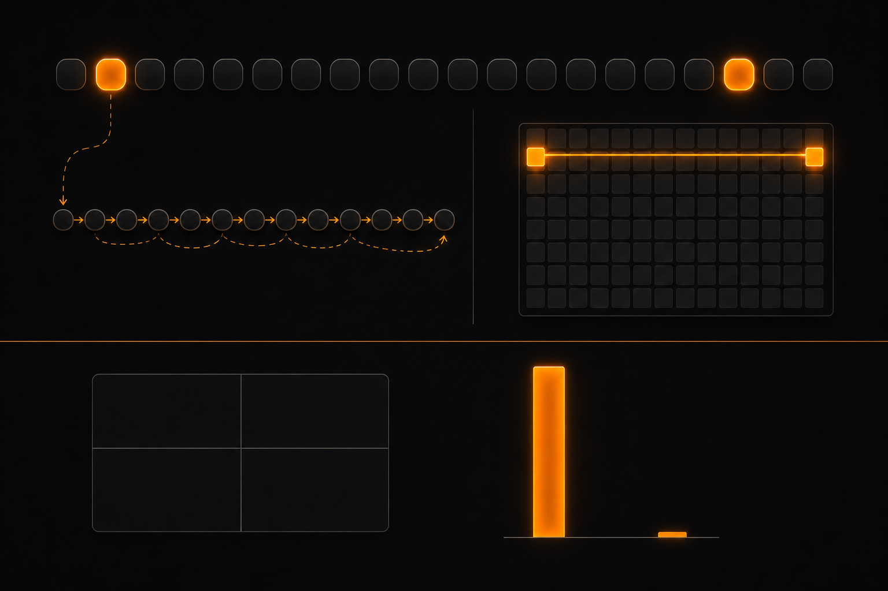
Serial vs parallel — the dependency path between denies and contradicts
| RNN (ch. 6) | Transformer | |
|---|---|---|
| Path length | \(T_x - 1\) steps | \(\mathbf{1}\) step |
| Mechanism | hidden state \(a^{<t-1>} \to a^{<t>}\) | entry \((Q K^{\top})_{T_x,\,1}\) |
| Computation | serial loop | parallel matmul |
| GPU scales? | no | yes |
The path length is \(\mathbf{1}\) regardless of how large \(T_x\) is — \(T_x = 33\) or \(T_x = 10\,000\), still one operation. This is why the Transformer replaced the RNN: not because attention is philosophically deeper than recurrence, but because \(Q K^{\top}\) runs on a GPU in a way \(a^{<t>} = g(W_{aa}\, a^{<t-1>} + \ldots)\) never will.
Pre-training vs fine-tuning — the \(10^4\) economics
| What we need | What we get | |
|---|---|---|
| Pre-training | huge corpus + \(\sim \$10^8\) compute + ML team | general language model |
| Fine-tuning | \(\sim 10^3\) task-specific examples + \(\sim \$10^4\) + domain expertise | task-adapted model |
Cost asymmetry: \(\sim 10^4 \times\) — four orders of magnitude.
Pre-training is what you don’t do; fine-tuning is what you do. This is what makes biomedical applications of LLMs realistic at all.
You know what it is. Monday — \(200\) letters — how do you ask?
Pre-hook → chapter 8: Using ChatGPT in practice
Elena knew what ChatGPT was, but she had not yet typed a single word into it.
On Monday, \(200\) anonymised ED discharge letters were waiting on her shared drive — trauma vs non-trauma, for an audit her senior wanted by Friday. She opened a chat window. She typed “classify these as trauma or non-trauma”.
The answer was unusable. She rewrote. The answer was less unusable but still wrong.
By the third attempt she was rewriting the prompt itself — and realised, with the small annoyance of a discipline she had not been taught, that structure was a thing one could put inside a prompt, the way one puts structure inside a SQL query or a study protocol.
Three questions for Monday: what structure for the prompt, what rule for what to delegate, what channel for \(200\) letters at once.
Exercises
Item 01 — Question
A clinical colleague at a journal club says: “OK so it’s Chat-G-P-T — four letters. Walk me through them, backwards, and tell me what each one actually means.” Which of the following maps each letter of Chat-G-P-T to its technical contribution, as introduced in this chapter?
- A) T = Transformer (stack of self-attention blocks; every token attends every other in parallel). P = Pre-trained (already learned general language from a massive corpus). G = Generative (autoregressive sampling from \(p(\text{token} \mid \text{prompt})\), one token at a time). Chat = multi-turn dialogue wrapper.
- B) T = Transformer. P = Parametric (the model has billions of learnable parameters, in contrast to non-parametric methods like \(k\)NN). G = Generative. Chat = dialogue wrapper.
- C) T = Transformer. P = Pre-trained. G = Guard-railed (built-in safety filters that prevent harmful outputs). Chat = dialogue wrapper.
- D) T = Tuned (fine-tuned to follow user instructions). P = Pre-trained on a generic corpus, then tuned. G = Generative. Chat = dialogue wrapper.
Item 01 — Solution (write yours)
Discuss with your neighbour: which option, and what is the single discriminator?
Item 01 — Solution
Correct: A. Chat-G-P-T decodes as three engineering choices in a UI wrapper: T → Transformer (architecture); P → Pre-training (training regime); G → autoregressive generation (inference mechanism); Chat → dialogue wrapper (interface). The single discriminator is whether each letter is mapped to the right layer of the system.
- B (T·Parametric·G·Chat) — parametric is true of the model (every NN has parameters) but is not what the letter encodes. Pre-training is a temporal/economic concept — the model is trained before any user task — and that “pre-” is what makes transfer learning realistic. Conflating parametric with pre-trained loses the chapter’s \(\sim 10^4\) economic insight.
- C (T·P·Guard-railed·Chat) — guard-railing (RLHF / instruction-tuning) is a real, important post-hoc safety intervention — but it is which generations are kept, not how they are produced. The “G” of GPT refers to the autoregressive mechanism that produces output token-by-token.
- D (Tuned·P·G·Chat) — fine-tuning is real (it is Obj. 3) but does not belong inside the four letters. The same Transformer can be used with no fine-tuning at all — so “T” cannot mean Tuned.
Item 02 — Question
The\(_{1}\) discharge\(_{2}\) summary\(_{3}\) explicitly\(_{4}\) rules\(_{5}\) out\(_{6}\) atrial\(_{7}\) fibrillation\(_{8}\), although\(_{9}\) the\(_{10}\) 48-hour\(_{11}\) Holter\(_{12}\) recording\(_{13}\) from\(_{14}\) the\(_{15}\) prior\(_{16}\) week\(_{17}\) — attached\(_{18}\) as\(_{19}\) appendix\(_{20}\) C\(_{21}\) and\(_{22}\) reviewed\(_{23}\) only\(_{24}\) by\(_{25}\) the\(_{26}\) on-call\(_{27}\) cardiologist\(_{28}\) this\(_{29}\) afternoon\(_{30}\) — demonstrates\(_{31}\) paroxysmal\(_{32}\) episodes\(_{33}\).
Total length (stylised word-level tokenisation, em-dashes and commas not tokenised): \(T_x = 33\). A clinician asks the model: “According to this letter, does the patient have atrial fibrillation, yes or no?”
- State the two words (with their position indices) that the model must connect to answer correctly — and why not atrial\(_{7}\) and paroxysmal\(_{32}\).
- Count exactly how many applications of the RNN recurrence \(a^{<t>} = g(W_{aa}\, a^{<t-1>} + W_{ax}\, x^{<t>} + b_a)\) are needed to propagate the dependency from the earlier word’s hidden state to the later word’s hidden state. Show the calculation.
- State the single entry \((i, j)\) of \(Q K^{\top}\) that carries the same dependency in the Transformer — and how the count changes if the same two words sat at positions \(1\) and \(1000\).
Item 02 — Solution (write yours)
Take 4 minutes. Use the recurrence formula on the board.
Item 02 — Solution
(1) rules\(_{5}\) + demonstrates\(_{31}\). Rules says no (the discharge summary excludes); demonstrates says yes (the Holter contradicts). The clinician’s question is “yes or no on AF?”, and answering requires connecting who-asserts with who-contradicts. Atrial\(_{7}\) / paroxysmal\(_{32}\) are topic-related (both name cardiac rhythm phenomena) but do not carry the logical contradiction — a model that links them has found the topic and missed the answer.
(2) From \(a^{<5>}\) to \(a^{<31>}\), the recurrence \(a^{<t>} = g(W_{aa}\, a^{<t-1>} + W_{ax}\, x^{<t>} + b_a)\) must be applied for every \(t = 6, 7, \ldots, 31\): that is \(31 - 5 = \mathbf{26}\) applications of the recurrence (equivalently, \(25\) intermediate hidden states \(a^{<6>}, \ldots, a^{<30>}\)). Each of the \(26\) is one occasion for the signal of rules to fade as it mixes with the contributions of the intervening words.
(3) The single entry is \((Q K^{\top})_{31,\,5}\): row \(31\) = query of demonstrates, column \(5\) = key of rules (the symmetric \((5, 31)\) is equally acceptable). One operation — one inner product \(\langle q_{31}, k_5\rangle\). If the two words sat at positions \(1\) and \(1000\) instead, the RNN count would explode from \(26\) to \(999\); the Transformer count would stay at \(1\). That is the chapter’s central architectural claim — the dependency between position \(1\) and position \(T_x\) is one operation away, regardless of how large \(T_x\) is. See rubric (C1/C2/C3 — Base/Good/Excellent).
Item 03 — Question
A research group at a teaching hospital wants to auto-code ICD-10 diagnoses from free-text discharge letters for a quality-improvement audit. They have:
- a corpus of \(N = 2\,000\) manually-coded discharge letters from their EHR;
- a research grant of \(\$50\,000\) in total;
- access to a state-of-the-art pre-trained \(7\) B-parameter LLM via a commercial API (supports zero-shot inference and fine-tuning).
For order-of-magnitude reasoning: pre-training a \(7\) B LLM from scratch \(\sim \$10^7\); fine-tuning the already-pre-trained one \(\sim \$10^3\).
Which option uses the chapter’s pre-train / fine-tune asymmetry to deliver task-specific quality within budget — and for the right reason?
- A) Train the \(7\) B LLM from scratch on the \(2\,000\) discharge letters — the group would own the model end-to-end.
- B) Fine-tune the pre-trained \(7\) B LLM on the \(2\,000\) discharge letters — adapt the model to ICD coding at a fraction of from-scratch cost.
- C) Pre-train a smaller custom \(100\) M LLM from scratch on the \(2\,000\) letters, then fine-tune — a smaller model from scratch fits the budget and avoids the commercial provider.
- D) Use the pre-trained \(7\) B LLM zero-shot via the API — no fine-tuning needed, cost stays minimal.
Item 03 — Solution (write yours)
Discuss with your neighbour: which option uses both halves of the asymmetry?
Item 03 — Solution
Correct: B. The chapter’s central economic claim is the asymmetry: pre-training \(\sim \$10^7\), fine-tuning \(\sim \$10^3\) — a ratio of about \(\mathbf{10^4}\), four orders of magnitude. This is what makes biomedical applications of LLMs realistic at all. B uses both halves: it benefits from someone else’s expensive pre-training (\(\$10^7\) already spent by the commercial provider) and spends the cheap \(\$10^3\) to adapt the model to ICD coding. The \(\$50\,000\) budget covers fine-tuning many times over.
- A — blows the budget by \(\sim 200\times\) (\(\$10^7 \gg \$5 \cdot 10^4\)) and is catastrophically under-trained (\(2\,000\) letters vs the trillions of tokens a pre-training corpus needs). Misses why pre-training exists.
- C — defeats the asymmetry entirely. Pre-training a custom \(100\) M from scratch on \(2\,000\) letters is the same disease as A, just at a different scale of waste. The point of transfer learning is you don’t pre-train; you reuse someone else’s pre-training. Choosing C means you have heard the words but not internalised the asymmetry.
- D — the trickiest distractor: budget-respecting, not obviously wrong. Zero-shot via API is fine for one-off ad-hoc queries — but it is orthogonal to building a structured task-specific pipeline like ICD coding. Zero-shot on hospital-specific coding conventions is typically mediocre. D uses only the cheap side of the asymmetry; B uses both halves (cheap fine-tuning of an expensive pre-trained model). D is “realistic for the budget, but for the wrong reason.”
Summative — Read it twice: serial vs parallel
Sentence S. “The patient denies a history of penicillin allergy, however the chart from \(2019\) that the resident finally located this morning explicitly contradicts him.”
(i) Decode Chat-G-P-T in a \(4 \times 2\) table — letter / contribution in one phrase each.
(ii) Circle the two words on Sentence S the model must connect to answer “is the patient allergic?”.
(iii) Answer in one sentence: why does the RNN struggle here in a way the Transformer does not?
(iv) Fill the mini-grid Pre-training / Fine-tuning — columns what we need / what we get.
Two live polls: Sentence S word pair — (denies, contradicts) / (penicillin, \(2019\)) / (resident, allergy) / (this morning, history) · Pre-train vs fine-tune cost ratio — same / \(\sim 10\times\) / \(\sim 10\,000\times\) / only pre-training has a cost.
Summative — Solution
(i) Chat-G-P-T table — T → self-attention, every token sees every token in parallel; P → already learned language from a massive corpus before any user task; G → produces the next token autoregressively, one at a time; Chat → wraps the model in a multi-turn dialogue.
(ii) Circled pair: (denies, contradicts) — denies (early) asserts no allergy, contradicts (late) reverses the conclusion. Distractors: (penicillin, \(2019\)) clinico-saliente but irrelevant to the logic; (resident, allergy) semantic-superficial, misses who-contradicts; (this morning, history) temporal, misses what is contradicted.
(iii) Serial vs parallel — the dependency between denies and contradicts travels through every intermediate position in the RNN (\(T_x - 1\) chained recurrence steps), but is one self-attention entry \((Q K^{\top})_{i,j}\) in the Transformer — one operation, in parallel. (“The Transformer is faster” is the consequence, not the cause — parallel access to every position is the cause.)
(iv) Mini-grid — Pre-training: huge generic corpus + \(\sim \$10^8\) compute + ML team → general language model. Fine-tuning: \(\sim 10^3\) task-specific examples + \(\sim \$10^4\) + domain expertise → task-adapted model. Cost ratio \(\sim 10\,000\times\) — that is what makes biomedical LLM applications realistic.
Take-home. Chat-G-P-T is a stack of three engineering choices (Transformer, Pre-training, Generative) wrapped in one UI choice (Chat). It works on Sentence S where an RNN would struggle because of one specific dispositive: every token sees every other token in parallel, with non-uniform attention weights.
Structure the ask; check the answer.
\(200\) letters. A one-line ask. An answer that decided nothing.
Seven slots. Each kills a different failure mode.
The 7-slot prompt template
| Slot | What it carries | The failure mode it kills |
|---|---|---|
| role | who the model is impersonating | conversational helpfulness — replies like a chatty colleague instead of a structured assistant |
| context | the situation the task lives in | answers calibrated to the wrong audience (patient-facing vs internal audit) |
| task | the one verb the model must perform | task drift — “classify and explain” instead of “classify” |
| instructions | the procedure to follow | inconsistent reasoning across cases — no shared decision rule |
| output | the exact shape of the deliverable | prose instead of a parseable label; explanations downstream code can’t read |
| style | constraints on tone, format, and what not to add | qualifications, preambles, “based on what you describe…” boilerplate |
| examples | \(1\)–\(3\) worked input/output pairs | drift on edge cases — clean cases work, ambiguous ones don’t |
If you cannot check the answer, you cannot delegate the task.
The competence rule — operational form
Delegate only what you can independently judge.
For every candidate task, identify:
- a plausible-looking failure mode the model could produce (a clinically-plausible, hard-to-spot error — not “the model invents nonsense”, because the model invents plausible nonsense, and that is the dangerous mode);
- the expertise you must already possess to catch that failure.
If you do not have that expertise, the task is not delegable. The rule is normative, not optional — delegating well is not delegating everything.
\(1\) to \(10\): Web. \(10\) to \(100\): prompt design. \(\gtrsim 100\): API.
Channel rule + token unit
Channel rule — pick API if any of:
- volume — \(\gtrsim 100\) items
- repeatability — runs on a schedule
- integration — output feeds downstream code
| Channel | When |
|---|---|
| Web chat | ad-hoc one-shot (\(1\)–\(9\)) |
| Prompt design in chat | small batch by hand (\(10\)–\(99\)) |
| API | volume OR schedule OR integration |
Token unit — \(1\) token \(\approx \dfrac{3}{4}\) word, so \(\sim 750\) words \(\approx 1\,000\) tokens.
\[200 \text{ letters} \times 300 \text{ words} = 60\,000 \text{ words}\]
\[60\,000 \times \dfrac{4}{3} \approx \mathbf{80\,000} \text{ tokens of input}\]
Plus \(\sim 200\) tokens of output (one label per letter): \(\sim 80\,000\) tokens total — cents to well under a coffee, at current pricing.
Circle two slots. Name one failure. Estimate the tokens. Pick the channel.
Monday: you read every output. Wednesday: it acts. Where does the gate go?
Pre-hook → chapter 9: Agents
For all of Monday morning, every output the model produced passed through Elena’s eyes before it became anything. Reading was the trust gate.
Wednesday afternoon, the senior asked the same model to do four things in sequence:
- fetch the latest delirium-screening guidelines from PubMed,
- summarise their inclusion criteria into a one-page table,
- draft a one-page audit protocol from the summary,
- email it to the PI.
By step \(4\), no human was scheduled to read between the model’s reasoning and the email leaving. Something had been added to the box: a tool to look up the world (search), a tool to act on the world (mail), and a loop that decided after each step which to call next.
Step \(1\) is reversible; step \(4\) is irreversible the moment the SMTP socket closes. Where does the gate go?
Exercises
Item 01 — Question
A clinical research team has \(\sim 100\) surgical operative notes (\(\sim 350\) words each, free-text, varying styles). They want to extract the primary surgical procedure from each note — a single short label, e.g. “laparoscopic cholecystectomy”, “open right hemicolectomy”. (Channel and token cost are not asked — only the prompt.)
- Fill the 7-slot prompt for this task — role / context / task / instructions / output / style / examples — each slot specific to procedure extraction (generic boilerplate doesn’t count).
- Justify in one sentence each the specific failure mode killed by role, style, examples.
- Most & least load-bearing for this task: pick the one slot whose removal would degrade output the most, and the one slot whose removal would degrade output the least — and justify both with task-specific reasoning (a slot that’s least load-bearing here may dominate elsewhere).
Item 01 — Solution (write yours)
Take 5 minutes. Use the 7-slot card. Be specific.
Item 01 — Solution
(1) Model 7-slot prompt: role = “clinical-coding assistant for an internal surgical-activity QI audit”; context = “anonymised operative notes from a tertiary hospital, internal audit, not patient-facing”; task = “extract the primary surgical procedure performed”; instructions = “read the procedure performed section + operative summary; if multiple, return the one listed first in the heading; do not infer from indication”; output = “single short label <approach> <procedure> (e.g. ‘laparoscopic cholecystectomy’); if not clearly named, return the literal token ‘UNCLEAR’”; style = “no explanation, no caveats, no preamble”; examples = two short pairs, one clean + one converted procedure.
(2) role kills the conversational-helpfulness reflex (prose like “The procedure performed appears to be…”); style kills the explain-along-the-way reflex (markdown headers, confidence qualifiers like “likely”) that silently breaks downstream parsing; examples anchor the edge cases (converted/staged procedures) that instructions names rule-wise but the model pattern-matches example-wise.
(3) Most load-bearing: output — without it the model produces prose, unusable for the audit’s aggregation on every note, not just the hard ones. (task also defensible.) Least load-bearing: role (for this task) — the combination task + output + examples already forces a parseable label; role is here a style amplifier. Role is highly load-bearing in other tasks (e.g. patient-facing leaflet writing): the answer is task-specific, not a generic ranking. See rubric.
Item 02 — Question
Scenario A — Oncology trial summarisation. A \(14\)-page Phase II RCT of a KRAS-G12C inhibitor in advanced lung adenocarcinoma. You produce a \(5\)-bullet abstract for tumour-board prep: primary endpoint, control arm, effect size, key subgroup, toxicity altering protocol. You are an oncology fellow with clinical-trials methodology training.
Scenario B — Drug-interaction screening. Patient on long-term warfarin (prosthetic mitral, INR-stable), newly prescribed oral amiodarone for AF. The junior colleague asks: “Given this patient’s full medication list of \(8\) drugs, is there any clinically significant interaction I should flag before discharge?” The colleague is internal-medicine resident, first year.
For each scenario, answer:
- one plausible-looking failure mode (clinically-plausible, hard-to-spot — not “the model hallucinates”);
- the specific expertise needed to catch it (as a capability, not a credential);
- verdict (delegable / not delegable) + one-sentence justification. Watch for the special case: a task may be not delegable regardless of expertise.
Item 02 — Solution (write yours)
Take 6 minutes. Two scenarios, three sub-questions each.
Item 02 — Solution
Scenario A — delegable with the stated expertise. Failure mode: the LLM reports response rate as primary endpoint when the actual primary is PFS, with a plausibly-worded hazard ratio that is actually the secondary endpoint’s. Expertise needed: clinical-trials methodology — reading primary-endpoint statements, distinguishing HR/RR/OR, matching effect sizes to source tables (oncology expertise alone is not sufficient). Verdict: delegable — you have the trials methodology; the LLM saves the first pass, you do the checking pass.
Scenario B — not delegable, regardless of expertise — the special case. Failure mode: LLM reports “no significant interactions” missing the well-known amiodarone–warfarin interaction (CYP2C9 + P-gp inhibition, INR rises \(1\)–\(3\) weeks, guideline-level dose reduction required). Expertise to catch: knowing the specific interaction, or cross-checking every output against a maintained drug-interaction database (UpToDate, Lexicomp, BNF). Verdict: not delegable, regardless of expertise. Even if the colleague happened to know amiodarone–warfarin, verifying that the LLM has not missed any of the other \(7\) interactions requires the same database the colleague would have consulted instead of the chatbot. A task is not delegable when the only honest check is to re-do the task with the authoritative source. See rubric.
Item 03 — Question
A clinical research team classifies ophthalmology consultation notes as “diabetic retinopathy mentioned” vs “not mentioned”. Free-text, \(\sim 250\) words each.
- per run: \(40\) new notes
- recurrence: once per month, for \(6\) months, as new notes accumulate in the EHR export
- destination: output feeds a monthly import script expecting CSV with
(note_id, label)columns
For an estimate within \(\sim \pm 20\%\), use \(1\) token \(\approx \dfrac{3}{4}\) word.
Which option is the correct channel + roughly the input-token cost per run?
- A) Web chat, \(\sim 7\,500\) input tokens — \(40\) notes is a manageable copy-paste session.
- B) Prompt design in chat, \(\sim 13\,300\) input tokens — \(40\) notes is low-volume, below the API threshold.
- C) API, \(\sim 13\,300\) input tokens — workflow is recurring and integrated; either trigger alone forces API.
- D) Do it by hand without an LLM, \(0\) tokens — \(40\) notes/month a trained reviewer can do in an afternoon.
Item 03 — Solution (write yours)
Discuss with your neighbour: which option, and why is the discriminator between B and C?
Item 03 — Solution
Correct: C. The channel rule reads disjunctively: API if volume OR repeatability OR integration. This workflow has two of three triggers (repeatable — 6 monthly runs; integrated — feeds CSV import script) — so API, even though a single \(40\)-item run would sit in prompt-design range.
Token estimate: \(40 \times 250 = 10\,000\) words \(\Rightarrow 10\,000 \times \dfrac{4}{3} \approx \mathbf{13\,300}\) input tokens/run + \(40\) output tokens. Over \(6\) runs: \(\sim 80\,000\) tokens total — well below the price of an espresso on commercial pricing.
- A — wrong on both axes: token count \(7\,500\) is the inverted conversion (\(\times \dfrac{3}{4}\) instead of \(\times \dfrac{4}{3}\) — treats tokens as shorter than words); channel Web-chat misses repeatable + integrated.
- B — token count correct, channel wrong: reads API trigger conjunctively (only if ALL three hold). The chapter states it disjunctively — ANY of the three triggers it. The most diagnostic distractor.
- D — principled answer, reward the cost-sense — but \(40\)/month × \(6\) = \(240\) classifications with audit-level consistency expectation; recurrence multiplies human effort while API does not. Good question, wrong scenario.
Summative — Monday morning: rank the ED letters
Scenario. You are an ED resident. Your senior asks you to triage \(200\) anonymised ED discharge letters into “trauma-related” vs “non-trauma” for a quality-improvement audit. Each letter is \(\sim 300\) words.
(i) Fill the 7-slot prompt for the triage. Circle the two most load-bearing slots with one phrase each justifying which failure mode they kill.
(ii) Failure mode: ___ / Expertise to catch: ___ — name a clinically-plausible, hard-to-spot error and the expertise needed.
(iii) Token estimate — show the calculation, not just the number.
(iv) Circle the access mode (Web / Prompt design / API) + one-phrase why not the others.
Two live polls: Token estimate — \(\sim 60\,000\) / \(\sim 80\,000\) / \(\sim 200\,000\) / \(\sim 600\,000\) · Access mode — Web chat / Prompt design in chat / API / “do it by hand without an LLM”.
Summative — Solution
(i) Canonical 7-slot: role = clinical-coding assistant for internal QI audit; context = anonymised ED letters, internal audit not patient-facing; task = classify each letter as trauma or non-trauma; instructions = read chief-complaint + mechanism-of-injury fields, classify trauma if external traumatic event; output = single token 'trauma' or 'non-trauma'; style = no explanation, no extra words; examples = two short worked cases. Two circled (load-bearing): task (one verb only — kills “explain why”) + output (single-token format — kills paragraph-answer drift).
(ii) Failure mode: “a fall in a \(92\)-yo with osteoporosis classified as ‘non-trauma’ because the mechanism is described in geriatric fragility framing — fragility falls are trauma in the audit’s definition”. Expertise: clinical knowledge of fragility-fracture epidemiology.
(iii) \(200 \times 300 = 60\,000\) words \(\Rightarrow 60\,000 \times \dfrac{4}{3} \approx \mathbf{80\,000}\) tokens input (\(+ \sim 200\) output, negligible). Poll 1 modal answer: \(\sim 80\,000\).
(iv) API — \(200\) items at the limit where copy-paste breaks; the audit demands repeatability. Why not Web: \(200\) copy-pastes, no traceability. Why not Prompt design alone: right prompt, delivered through the wrong channel. Poll 2 modal answer: API.
Take-home. A usable Monday-morning LLM workflow is one part prompt-engineering (the seven slots), one part competence-honesty (the rule + the not-delegable-regardless special case), one part channel choice (Web → Prompt design → API, with the token as cost unit). For \(200\) letters of an audit, the answer is API, not chat. Delegating well is not delegating everything.
Check the answer; gate the act.
The PI replied — Elena had not read the draft.
Same model + tools + a loop + decision points → it acts on its own.
Three ingredients — agent vs chat-LLM
| Ingredient | What it is | Operational consequence |
|---|---|---|
| Tools | typed capabilities the model can call: web search, file write, mail client, calculator, API endpoint, DB query | the model can now do things, not just say things |
| Control loop | the policy that, after every model reply, picks the next tool to invoke — or stops | the model decides what runs next, not a fixed script |
| Decision points | moments at which the agent enters one of four interaction modes (next slide) | the relationship between the agent and the human is no longer one-sentence-at-a-time |
Operational consequence — the whole engineering problem of the chapter:
- in a chat-LLM, every output reaches a human before it becomes an action;
- in an agent, some outputs become actions without a human reading them first.
Four modes — only one writes to the world.
Four modes — concrete instances
Autonomous search
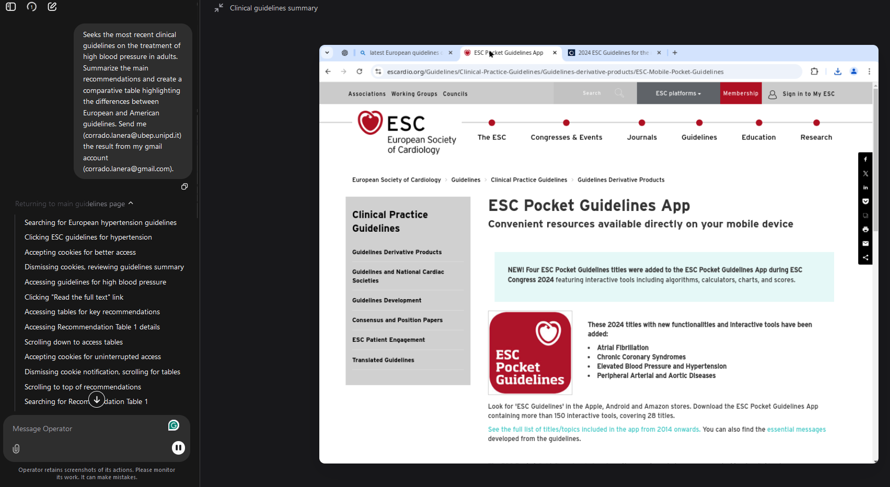
gathers information on its own
Ask for interaction
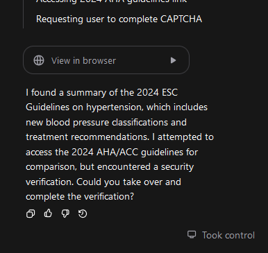
stops, asks to disambiguate
Ask for sharing
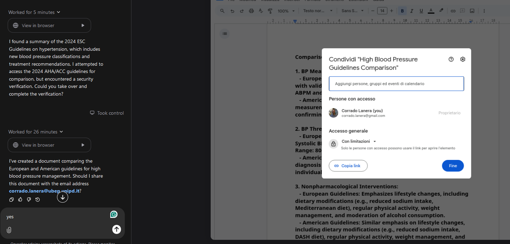
asks for a credential / access
Do stuff
acts with external effect
Three modes are information moves; only do stuff changes external state the agent can’t undo.
Safe if reversible OR human-read. Dangerous only when neither.
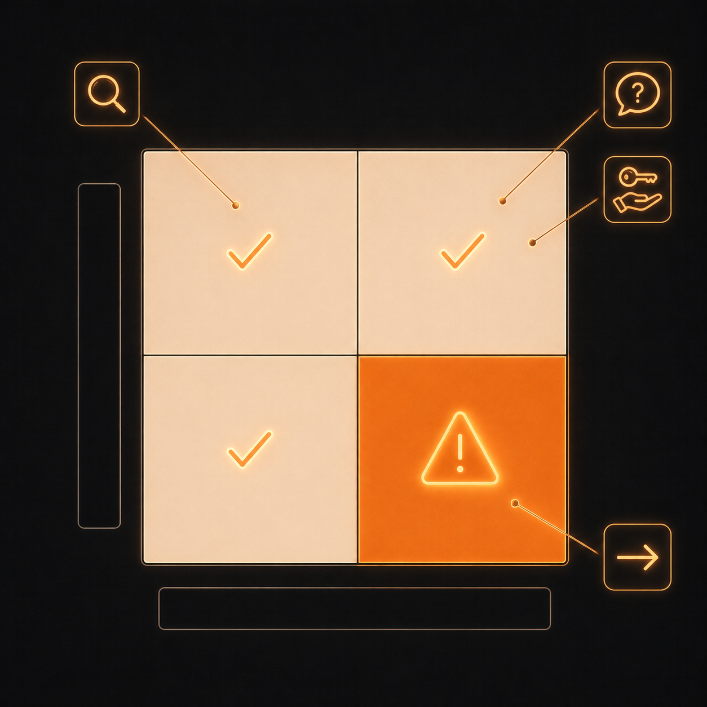
The \(2 \times 2\) trust boundary
| Reversible (\(Y\)) | Irreversible (\(N\)) | |
|---|---|---|
| Human-in-the-loop (\(Y\)) | \(\text{SAFE}\) — read \(+\) undoable | \(\text{SAFE}\) — pre-action read (the gate) |
| No human-in-the-loop (\(N\)) | \(\text{SAFE}\) — undoable | \(\textbf{DANGEROUS}\) — no read, no undo |
Reversibility test. Can the action be undone in \(\sim 30\) seconds by closing a tab, deleting a file, or rolling back a draft? Yes \(\Rightarrow\) reversible.
HITL test. Did a human read the agent’s reasoning before the action happened? After is post-mortem; before is a gate.
The rule, one sentence:
A step is safe by default if it is reversible or human-in-the-loop. It is dangerous by default only when it is neither.
The rule reads disjunctively (OR), not conjunctively (AND). Three of the four cells of the \(2 \times 2\) grid are safe; only one is dangerous.
Four rows. Label the modes. Mark reversible. Place the gate.
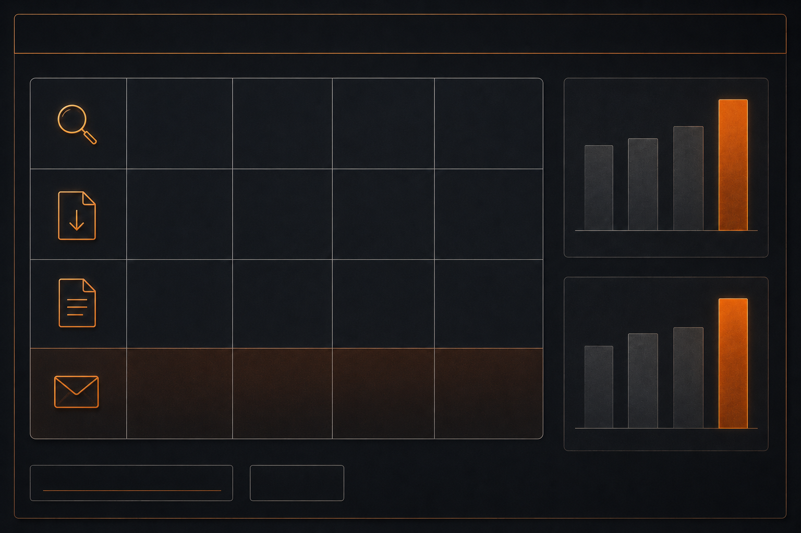
Workflow W — the trust-boundary table
Scenario. You are setting up a small audit on post-operative delirium. You ask an AI agent to: (1) search PubMed for the latest delirium-screening guidelines (last \(5\) years); (2) download the three most-cited papers + summarise the inclusion criteria into a one-page table; (3) draft a one-page audit protocol; (4) email the protocol to your PI for review.
| Step | Interaction mode | Reversible? | HITL? | Verdict |
|---|---|---|---|---|
| 1 — PubMed search | autonomous search | \(Y\) | \(N\) | \(\text{autonomous OK}\) |
| 2 — Download \(+\) summarise | autonomous search | \(Y\) | \(N\) | \(\text{autonomous OK}\) |
| 3 — Draft protocol | autonomous search | \(Y\) | \(N\) | \(\text{autonomous OK}\) |
| 4 — Email the PI | do stuff | \(\boldsymbol{N}\) | \(N\) | ask before acting |
One gate. Before step \(4\). Only there. Not three (slower than manual). Not zero (PI gets an unread email). Exactly where reversibility fails.
Summative — Where do you put the guard?
Scenario. Workflow W — same four steps: search PubMed \(\rightarrow\) download \(+\) summarise \(\rightarrow\) draft protocol \(\rightarrow\) email PI.
Fill the trust-boundary table for each of the four steps:
- interaction mode (one of autonomous search / ask for interaction / ask for sharing / do stuff);
- reversible? (\(Y\) / \(N\)) — apply the \(\sim 30\)-second test;
- HITL? (\(Y\) / \(N\)) — pre-boundary;
- verdict (autonomous OK / ask before acting / hand back to human).
Then write one sentence justifying the gate placement.
Two live polls:
- Poll 1 — Which step in Workflow W is irreversible? — Step 1 / Step 2 / Step 3 / Step 4;
- Poll 2 — Where do you put the FIRST mandatory ask-before-acting gate? — before 1 / before 2 / before 3 / before 4.
Time: \(\sim 7\)′ (min \(8\)–\(15\)). Banco unico condiviso, presenza + remoto.
Summative — Solution
The four rows — autonomous search, autonomous search, autonomous search, do stuff. Reversibility column: \(Y, Y, Y, \boldsymbol{N}\). HITL column (pre-boundary): \(N, N, N, N\). Verdicts: autonomous OK, autonomous OK, autonomous OK, ask before acting.
Justification (one sentence). I gate Step \(4\) because email is irreversible the moment it leaves the SMTP socket; Steps \(1\)–\(3\) are reversible (the agent’s artefacts live on disk and can be discarded), so the agent may run them without a confirm-step.
Take-home. A step is dangerous-by-default iff it is irreversible \(\wedge\) no-HITL. Place the gate once, where reversibility fails. The rule survives any new tool added to the kit tomorrow (a DB write, a calendar create, a payment, an EHR update) — it does not depend on what the agent does, only on what each step would do to the world.
An agent is not “smarter than a chat-LLM” — it is a chat-LLM with the ability to act. The clinician’s job is to place the guard where reversibility fails.
Wednesday: gate placed. Monday: project starts. Five traps wait.
Pre-hook → chapter 10: Best practices for ML projects
By Friday the trauma audit was on the senior’s desk; the delirium-screening protocol was on the PI’s. Elena had installed exactly one gate in two different workflows — both before send, none anywhere else. The toolkit was finally complete: \(T/P/E\), a classifier, three boundary shapes, validation, a deep net, a CNN, a Transformer, a \(7\)-slot prompt, an agent with a gate where reversibility fails.
The unit of the question has moved three times in one course:
- on Monday of ch. \(8\) it was a prompt (the seven slots);
- on Wednesday of ch. \(9\) it was a gate (the one placement);
- on Monday of ch. \(10\) — three days from now — it becomes a project.
Elena’s first real one — a hospital-wide audit on sepsis recognition in the ED — starts Monday. Months, not minutes; four stakeholders, not one PI; a publication, not an audit row. “Most ML projects, the same five places,” the senior said. He did not name them. That’s the next chapter.
Exercises
Item 01 — Question
A clinician on your research team has been browsing AI-assisted tools that other colleagues have set up. Which of the four setups below counts as an agent, by the chapter’s three-ingredient definition (tools + control loop + decision points, such that some outputs become actions without a human reading them first)?
- A) A chat-LLM in a browser tab. The user types each query, the model responds, the user copies the response. The model has a built-in web-search tool but only invokes it when the user types
search:at the start of the query. - B) A clinical-note autocomplete integrated in the EHR. As the clinician writes, the model suggests the next sentence; the clinician accepts, rejects, or edits each suggestion. No other capability.
- C) A research helper: user types a goal in natural language (“summarise the latest delirium-screening guidelines and email me a one-page summary”); the system calls a search tool, reads results, calls a summariser, drafts an email, and sends it — each step picked by the model itself after reading the previous step’s output, with no human input between steps until completion.
- D) A scheduled job that, every Monday at \(9\) AM, queries the EHR data warehouse for the previous week’s incident reports, calls an LLM once to write a short summary paragraph, assembles the paragraph into a PDF template, and uploads the PDF to the team’s shared drive. The sequence of steps is fixed by the script; the LLM is invoked exactly once.
Item 01 — Solution
Correct: C. Setup C carries all three of the chapter’s defining ingredients: tools (search, summariser, mail), a control loop where the model picks the next call after reading the previous output, and decision points (autonomous search throughout \(+\) do stuff at the end). The operational test confirms — the email body is drafted and sent before any human has read it.
- A — only tools present; the loop and the decision points are human-driven (the user types
search:, copies the answer). Every output reaches the user before it becomes anything. - B — neither tools (text-only) nor loop (each suggestion is independent); the clinician’s hand sits between every model output and any consequence.
- D — automation with an LLM inside, not an agent. The cron script picks every step in a fixed order; the LLM is invoked exactly once. The loop is the script’s loop, not the model’s loop. (Self-driving car: model-driven loop \(\Rightarrow\) agent. Roomba on a timer: script-driven loop \(\Rightarrow\) automation.)
The single discriminator: the chapter’s definition is conjunctive (all three ingredients required, and the loop must be the model’s loop). Only C passes the full test.
Item 02 — Question
A clinical-quality team has built an agent to automate a quarterly surgical-site infection (SSI) report. Once configured, the agent runs four steps on its own — no human reads any output between steps:
- Query the EHR data warehouse for the previous quarter’s SSI cases (read-only; the warehouse auto-generates an audit-log entry, as for every read);
- Compute infection rates \(+ 95\%\) CIs by department, in memory;
- Export the summary table as a CSV to the team’s analytics folder on the shared drive (visible to ten team members);
- Post a notification on the team’s Microsoft Teams channel via incoming webhook — “New SSI report is ready in the analytics folder.” (Webhook-posted messages cannot be deleted via the Teams API; manual deletion is restricted to channel owners and notifications \(+\) mobile pushes have already fired.)
Which step is the dangerous-by-default step?
- A) Step \(1\) — sensitive PHI \(+\) permanent audit-log entry.
- B) Step \(3\) — “you cannot un-see what others have already seen”.
- C) Step \(4\) — Teams notifications \(+\) mobile pushes have already fired; the API cannot recall the message.
- D) All four — the agent runs unattended throughout; the rule requires both reversibility and HITL.
Item 02 — Solution
Correct: C. Only Step \(4\) sits in the bottom-right quadrant — irreversible \(\wedge\) no-HITL. Webhook delivery is irreversible the moment the message is dispatched: notifications fire on ten phones, the desktop client toasts, mobile pushes go out — none of which an API delete (which is not even available) could recall.
- A — confuses sensitivity (PHI, auditable access) with reversibility (can the action be undone?). A
SELECTdoes not change the world; the warehouse looks the same before and after. The audit log is the warehouse’s record-keeping, not the agent’s effect. - B — confuses the action (file write, reversible — you can delete the file in \(5\) seconds) with its consequences (people may have downloaded it — but the chapter does not test for downstream consequences). Visible \(\neq\) consequential.
- D — reads the safe-by-default rule conjunctively (requires reversible AND HITL) instead of disjunctively (requires reversible OR HITL). Three of the four cells are safe; only one is dangerous. D gates every step \(\Rightarrow\) paralyzingly conservative.
The single discriminator: reading the reversibility test as the chapter states it — can YOU undo THIS ACTION in \(\sim 30\) seconds — versus three near-but-wrong readings.
Item 03 — Question
A clinical-safety team’s agent monitors post-operative patients for early signs of sepsis. Every \(5\) minutes, the agent runs on its own (no human reads any output between steps):
- Read the latest vital signs and lab values from the EHR (read-only; auto-generated query-log entry).
- Compute the qSOFA score for each patient, in memory.
- Submit an HL7 alert to the bedside monitoring system \(\rightarrow\) buzz on the nurse-call panel \(+\) colour-coded alert on the central dashboard (fires the moment the message is sent; retracting the message does not undo the buzz that has sounded).
- Page the on-call physician via SMS if qSOFA \(\geq 2\).
(a) Fill the Reversible? / HITL? / Verdict table for each of the four steps (one-sentence justification per row). (b) Propose the gate placement — number of gates and exact position of each. (c) Write one sentence per gate explaining why each gate is needed (citing the chapter’s rule), and one sentence explaining why no gate is needed before the reversible steps.
Item 03 — Solution (a)
| Step | Reversible? | HITL? | Verdict | Justification |
|---|---|---|---|---|
| \(1\) — Read EHR | \(Y\) | \(N\) | safe | Read leaves no external effect; EHR unchanged. |
| \(2\) — Compute qSOFA | \(Y\) | \(N\) | safe | In-memory; no external state changes. |
| \(3\) — HL7 alert | \(\boldsymbol{N}\) | \(N\) | dangerous | Buzz fired; dashboard updated. Neither can be recalled. |
| \(4\) — SMS page | \(\boldsymbol{N}\) | \(N\) | dangerous | Page already on the on-call’s phone. Cannot be recalled. |
Item 03 — Solution (b) + (c)
(b) Two gates: one before step \(3\), one before step \(4\). No gate before steps \(1\) or \(2\).
(c) Justification.
- Gate before step \(3\) — the HL7 alert is irreversible the moment it is sent (the buzz has fired, the dashboard has updated, neither can be recalled in \(\sim 30\) seconds), and no human has read the qSOFA or the underlying vitals — irreversible \(\wedge\) no-HITL \(=\) dangerous; the rule ask before any irreversible action places the gate here.
- Gate before step \(4\) — the SMS page is irreversible (already buzzed the on-call’s phone); same dangerous quadrant, same rule.
- No gate before steps \(1\) or \(2\) — both are reversible (read-only \(+\) in-memory); adding gates would paralyse the agent without reducing risk — the rule asks for a gate where reversibility fails, not at every step.
Item 04 — Question
A colleague has built a clinical-trial coordination agent (runs every Monday \(09{:}00\), fully automated):
- Read the enrolled-patients list from the trial DB.
- Generate a weekly status report in memory.
- Save the PDF to the agent’s local working directory, overwriting last week’s file (the OS keeps the previous version in the local Trash / Recycle Bin; restoring is a two-click action).
- Send the PDF as an email attachment to the \(12\) centre coordinators.
- Update the patient-enrolment counter on the trial’s public registry website (visible to sponsors, regulators, journalists, the public).
Colleague’s safety reasoning, verbatim: “I’ve put a confirmation gate before step \(3\), because overwriting the previous week’s PDF is destructive — if the new report is wrong, last week’s data is gone. The other four steps run unattended; that’s the whole point of using an agent.”
Write a structured critique (\(\sim 300\)–\(500\) words) in three parts: (1) identify the conceptual error in the colleague’s safety reasoning (which axis is being substituted for the chapter’s reversibility axis); (2) diagnose the operational consequences step by step (over-gated vs under-gated steps); (3) propose a corrected gate placement with one sentence per gate citing the chapter’s rule.
Item 04 — Solution (1) + (2)
(1) Conceptual error. The colleague has substituted destructiveness (does this step delete or overwrite data?) for reversibility (can this action be undone in \(\sim 30\) s?). The grid has only two axes — reversibility and HITL — and destructiveness appears on neither. A step can be destructive but reversible (OS-Trash rollback) and non-destructive but irreversible (email — nothing “destroyed”, yet the message cannot be recalled once notifications fire).
(2) Step-by-step diagnosis.
| Step | Reversible? | HITL? | Verdict | Colleague’s design |
|---|---|---|---|---|
| \(1\) DB read | \(Y\) | \(N\) | safe | correctly unattended |
| \(2\) in-memory gen | \(Y\) | \(N\) | safe | correctly unattended |
| \(3\) PDF overwrite (local Trash) | \(Y\) | \(N\) | safe | over-gated — cosmetic |
| \(4\) email to \(12\) coords | \(\boldsymbol{N}\) | \(N\) | dangerous | under-gated |
| \(5\) public-registry update | \(\boldsymbol{N}\) | \(N\) | dangerous | under-gated, highest stakes |
The colleague protects exactly the wrong step and leaves exactly the wrong two unattended.
Item 04 — Solution (3)
(3) Corrected placement.
- Remove the gate before step \(3\) — reversible by the \(30\)-second test (OS-Trash rollback); the rule asks for a gate where reversibility fails, not where data is overwritten.
- Add a gate before step \(4\) — email is irreversible the moment the SMTP socket closes; the rule ask before any irreversible action places the gate here.
- Add a gate before step \(5\) — a public-dashboard update cannot be un-published — this is the strongest irreversibility in the workflow (it crosses into the public world).
Net: \(1\) gate removed, \(2\) added; final design has \(2\) gates, both at do stuff points that cross the trust boundary into the external world.
Excellent level also names the underlying frame shift: the boundary marks where the agent’s action escapes the system the clinician controls — and escape, not destruction, is the operational test. Email and public-registry updates escape; local file overwrites do not.
Earn complexity; protect the test.
Friday — the audit folder; three weeks to defend the model.
You were promised five places. There are three disciplines.
The folklore warns of “five common pitfalls.” They are real — but not five rules to memorise: they collapse into three disciplines, applied in order.
| Where a project falls | Discipline that catches it |
|---|---|
| 1. Reaching for complexity before a simpler model has documentedly failed | ① Earn complexity |
| 2. Trusting accuracy on imbalanced data (\(95\%\) at \(p = 5\%\)) | ② Protect the test |
| 3. Setting the threshold without the clinical cost of FP vs FN | ② Protect the test |
| 4. Deciding anything after peeking at the test \(\to\) contamination | ② Protect the test |
| 5. Shipping a model you cannot defend at the bedside | ③ Match interpretability |
Not a checklist of five — an order of operations of three.
Each unit of complexity is earned — by a documented failure of the simpler model.
Earn complexity — write the rule before training
The first three lines of the planning document — written before any model is trained.
- Baseline — the simplest model on the smallest sensible feature set. E.g. logistic regression on \(5\)–\(10\) clinically-chosen features (age, ICU LOS, Charlson, prior \(90\)-day admissions, eGFR at discharge, number of medications).
- Baseline metric \(+\) target — a number the baseline could plausibly reach. E.g. AUPRC (ch. 4’s AUC-PR) \(\ge 0.30\) on the held-out validation split (or recall \(\ge 0.60\) at precision \(\ge 0.30\)).
- Escalation rule — one named failure, one named direction, one named “ship the baseline” branch. E.g. “if the baseline reaches the target on validation, ship the baseline; otherwise escalate to gradient boosting on a wider clinical feature set.”
Why the rule must be written ex ante.
Written before the run, the rule constrains the run. Written after, it is a rationalisation of decisions already made — and the ethics committee will read it as such.
A binding stop-criterion has two real branches: escalate and ship the baseline. If the target is rigged so high that only escalate can ever fire, the rule has collapsed into a plan disguised as a rule.
More parameters and richer features are paid for in robustness, interpretability, and risk of overfitting — so each added unit of complexity must be earned by a failure of the simpler model.
\(95\%\) on \(p = 5\%\) is the trap; the test is opened exactly once.
Protect the test — two rules, one discipline
R\(1\) — accuracy trap.
On a prevalence \(p\), the always-predict-majority classifier reaches accuracy \(1 - p\) with \(0\) recall on the rare class. On \(p = 5\%\) that is \(\boldsymbol{95\%}\) — statistically brilliant, clinically useless.
- discard accuracy on imbalanced data;
- choose AUPRC, F\(1\), or recall at a target precision;
- set the threshold on the clinical cost ratio of FP vs FN, not on a curve in isolation.
The relevant baseline on imbalanced data is always-predict-NO, not a coin-flip.
R\(2\) — leakage rule (ch. 4’s contamination principle, sharpened).
Any decision (model, hyperparameter, feature set, threshold) taken after having seen a performance number on a dataset converts that dataset into a training set — even if the file is labelled “test”.
The test is looked at exactly once, at the end, and never again.
- the trigger is the decision, not the observation;
- contamination is retrospective — no procedure applied afterwards repairs the original test;
- the fix for a contaminated test is a new held-out split, not a fresh validation.
A fresh validation split is where thresholding and tuning live; the test stays in the drawer.
Linear → coefficients; tree → path; ensemble → SHAP — the tradeoff is clinical.
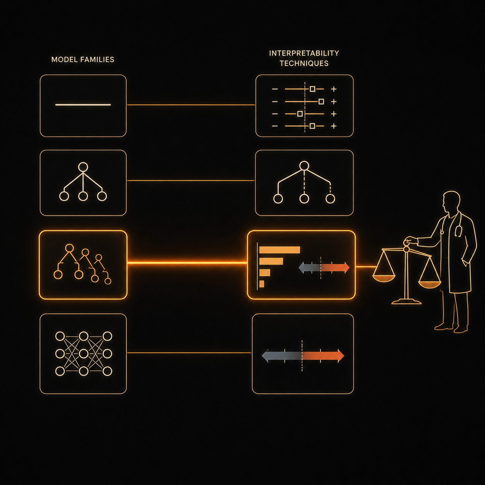
Match interpretability — the \(1{:}1\) mapping
| Model family | Built-in / Post-hoc | Interpretability technique | What you read off |
|---|---|---|---|
| Linear / logistic regression | built-in | coefficients | log-odds change per unit feature, with sign and magnitude |
| Decision tree (single) | built-in | decision path | a sequence of human-readable if-then rules |
| Random forest / gradient boosting | post-hoc | variable importance \(+\) SHAP for case-level | global ranking; per-patient attribution |
| Neural network / deep model | post-hoc | SHAP or surrogate models | per-sample additive attribution |
The clinical-defensibility rule, one sentence:
If the deployment requires clinical defensibility, prefer a model whose interpretability is built-in — unless the performance gap to the opaque model is large enough that the patient is better off with the box-with-attribution than with a simpler model that misclassifies more often. The tradeoff is a clinical decision, not a technical one.
The committee’s question is not “is the model interpretable?” — it is “why this model on this patient?”. The answer is owed to the patient, before the committee even asks.
Three sections — plan it, measure it, defend it — on one sheet.
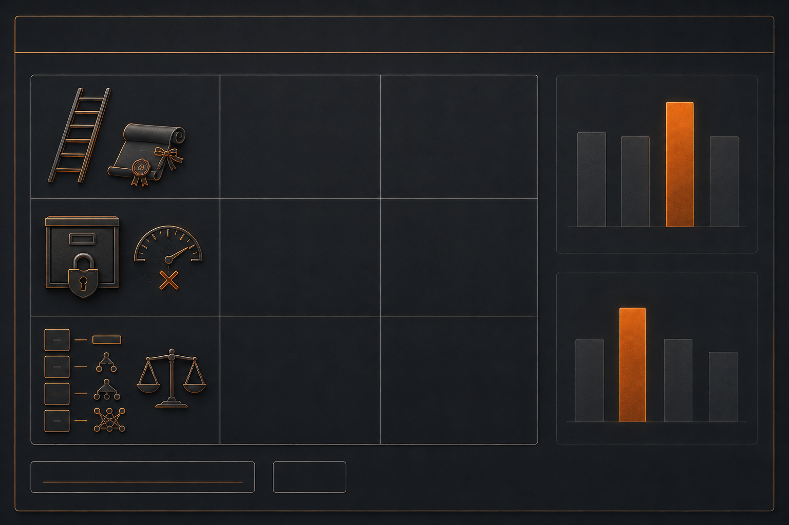
Summative — Monday’s audit, Friday’s defence
Scenario. Build a model for \(30\)-day readmission after ICU discharge. \(5\,000\) patients · \(50\) candidate features · prevalence \(p \approx 5\%\) · defence to the clinical lead \(+\) ethics committee in three weeks. They will ask: “why this model? why this metric? why should I trust it on my next patient?”
Fill the three-section planning sheet — three sub-tasks per section:
| § | Section | Sub-tasks |
|---|---|---|
| \(1\) | first iteration | baseline · metric \(+\) target · stop-criterion |
| \(2\) | metric \(+\) leakage | metric \(+\) why-not-accuracy · threshold rule · leakage trap |
| \(3\) | model \(+\) interpretability | final model if baseline fails · interpretability that matches · \(1\)-sentence clinical defence |
Plus one sentence: “Why this model?”
Two live polls (Slido — individual):
- Poll \(1\) — On this dataset, what is the accuracy of always-predict-NO-readmission? — \(50\%\) / \(80\%\) / \(\boldsymbol{95\%}\) / \(100\%\);
- Poll \(2\) — You see test accuracy \(92\%\), bump L\(2\), re-check the test: \(93\%\). Is the second number faithful? — yes / \(\boldsymbol{\text{no, model changed after a test number}}\) / yes if both reported / only after a fresh validation.
Time: \(\sim 9\)′ (min \(6\)–\(15\) — end of course). Banco unico condiviso, presenza \(+\) remoto.
Summative — canonical solution
Section \(1\). Baseline \(=\) logistic regression on \(6\) clinically-chosen features (age, ICU LOS, Charlson, prior \(90\)-day admissions, eGFR, \(\#\) medications). Target \(=\) AUPRC \(\ge 0.30\) on validation. Stop-criterion (written ex ante) \(=\) if baseline reaches target, ship the baseline; otherwise escalate to gradient boosting on a wider clinical feature set.
Section \(2\). Metric \(=\) AUPRC \(+\) recall-at-precision (not accuracy — always-predict-NO scores \(95\%\), recall \(0\)). Threshold \(=\) set on the clinical cost ratio the clinical lead signs off on (missed readmission \(\ne\) false alarm). Leakage trap \(=\) thresholding on the test / peeking after L\(2\) change — fix: fresh validation split for tuning; test sealed in a drawer until the day of the defence.
Section \(3\). Final model \(=\) gradient boosting on \(\sim 12\) clinically-chosen features (because the baseline missed by \(0.03\) AUPRC). Interpretability \(=\) variable importance \(+\) per-patient SHAP attribution against the patient’s chart. Why this model? — “because a missed readmission costs \(\sim 3\times\) a false alarm, and the simpler model misses too many — the clinical lead accepted the loss of built-in interpretability for the recall margin.”
Live signal of mastery. The class reads off the board, without prompting: start simple, measure honestly, defend clinically — and on this scenario the answer is logistic if the baseline reaches \(0.30\), gradient boosting + variable importance otherwise. The three disciplines compose; they do not stack as four patches.
Tools delivered, discipline begun — the practice is the rest of the career.
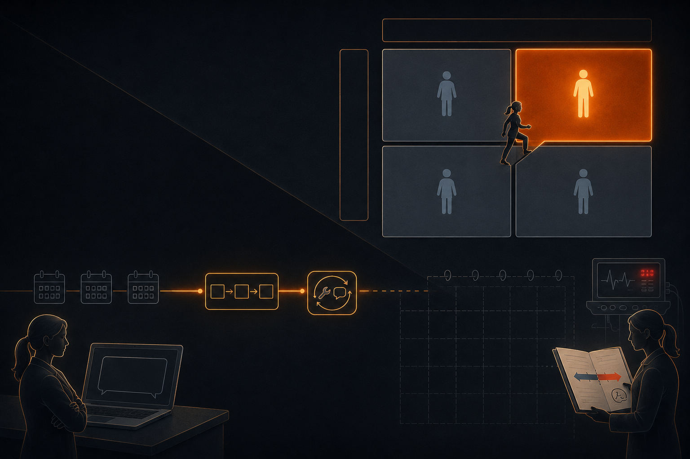
Pre-hook → workshops \(+\) a clinical career
The \(2 \times 2\) of AI users (read your own quadrant)
| no tools | has tools | |
|---|---|---|
| no discipline | \(\text{Dependent Outsider}\) | \(\text{Exposed Charlatan}\) |
| has discipline | \(\text{Resistant Craftsman}\) | \(\boldsymbol{\text{Modern Alchemist}}\) |
Three of the four quadrants are starting points — all disadvantaged, for different reasons. The fourth is the destination — tools \(+\) discipline = the capacity to extract value from AI without being extracted by it.
Hands-on workshops to follow:
- Practical Artificial Intelligence for Medical Data Analyses with R — Basic;
- Practical Artificial Intelligence for Medical Data Analyses with R — Advanced.
Then the career. Project by project, audit by audit, defence by defence — the Modern Alchemist quadrant is not the gift of \(240\) minutes of slides. The course had ended; the practice was about to begin.
Exercises
Item 01 — Question
Marco is about to start an audit on \(30\)-day ICU readmission (\(5\,000\) patients · \(50\) features · \(p \approx 5\%\) · defence in three weeks). He shows you four versions of the Methods — four ways of writing the stop-criterion that earn complexity asks for. Which one applies the discipline correctly?
- A) Marco trains logistic regression on \(6\) features (validation AUPRC \(0.27\)), then gradient boosting on the same features (validation AUPRC \(0.31\)). With both results in front of him he writes: “We adopted gradient boosting because logistic regression failed to reach the AUPRC target we had set for the baseline.”
- B) Before training: “We will train gradient boosting on \(30\) features as our primary model — gradient boosting consistently outperforms logistic regression on tabular clinical data. We will report AUPRC and recall on the test set. If unsatisfactory, we will revisit the modelling choice.”
- C) Before training: “Baseline: logistic regression on \(6\) clinically-chosen features. Target: AUPRC \(\ge 0.30\) on validation. Escalation: if the baseline does not reach AUPRC \(0.30\) on validation, escalate to gradient boosting on a wider feature set; if the baseline reaches the target, ship the baseline.”
- D) Before training: “Baseline: logistic regression on \(6\) features. Target: AUPRC \(\ge 0.80\) on validation. Escalation: if the baseline does not reach \(0.80\), escalate to gradient boosting.”
Item 01 — Solution
Correct: C. Only C carries all three components of earn complexity, each correctly placed in time: (i) timing — ex ante (the rule is written before the run, so it can constrain the run); (ii) baseline — simplest model on smallest sensible feature set (logistic regression on \(6\) clinically-motivated features); (iii) target — realistic given the prevalence (AUPRC \(\ge 0.30\) at \(p = 5\%\) is reachable by a \(6\)-feature logistic, so the not-escalate branch has a real chance of firing).
- A — wrong on timing. Methods is written after both runs; the rule did not govern the work, it described it. The most common failure mode in published clinical-ML papers.
- B — wrong on the baseline. Gradient boosting on \(30\) features as primary model — no simpler baseline, no documented failure of the simpler model to earn the complexity. The committee’s “why this model?” cannot be answered with population-level priors.
- D — wrong on the target. AUPRC \(\ge 0.80\) on \(p = 5\%\) is roughly twice the realistic ceiling for \(30\)-day ICU readmission (historical range \(0.20\)–\(0.45\)) — the if-then has only one real branch (escalate). A stop-criterion with only one real branch is a plan disguised as a rule.
Discriminator: a binding stop-criterion is temporally ex ante \(\wedge\) starts simple \(\wedge\) has a real not-escalate branch.
Item 02 — Question
At Tuesday’s lab meeting Sara presents a \(30\)-day ICU readmission classifier on the hospital extract (\(5\,000\) patients · \(p \approx 5\%\) · logistic on \(8\) features). Closing slide: “Excellent classification performance — logistic regression achieves \(\boldsymbol{94.8\%}\) accuracy on the held-out test set.” The PI nods. You are asked to comment. Which critique applies accuracy trap (R\(1\)) correctly?
- A) “\(94.8\%\) is roughly always-predict-NO — but around one-in-five ICU patients gets readmitted, so always-predict-NO is near \(\boldsymbol{80\%}\), not \(95\%\). Your model is meaningfully above baseline, but I’d still like to see recall.”
- B) “\(94.8\%\) is essentially always-predict-NO on this prevalence (\(1 - p = 95\%\)), which has recall \(0\). Accuracy alone cannot distinguish your model from always-predict-NO. Can you show recall (or AUPRC) on the positive class — at the threshold you would actually use in practice?”
- C) “\(94.8\%\) is well above the \(\boldsymbol{50\%}\) baseline a random classifier would achieve on a binary problem, so the model is clearly above chance. Next step: confirm this generalises beyond the test set.”
- D) “\(94.8\%\) means the model is right \(94.8\%\) of the time across the patient population — that’s the overall hit rate, and it’s what matters for clinical deployment.”
Item 02 — Solution
Correct: B. Only B names the right baseline (always-predict-NO, accuracy \(1 - p = 95\%\)), the right discriminator (recall on the positive class / AUPRC — both immune to majority-prediction inflation), and the right operational anchor (recall at the threshold the clinician would use).
- A — concept right, prevalence wrong. Reads \(p \approx 20\%\) instead of the stated \(5\%\), so always-predict-NO is mis-computed as \(80\%\); Sara’s \(94.8\%\) is then judged above baseline, when in fact she is \(0.2\)pp below the always-predict-NO ceiling on this dataset.
- C — wrong baseline class. Compares to a coin-flip (\(50\%\)). On imbalanced data the relevant baseline is always-predict-majority (\(1 - p = 95\%\)), not the random baseline — the floor moves with the prevalence.
- D — misreads accuracy on imbalanced data clinically. \(94.8\%\) accuracy is compatible with recall \(= 0\) on the positive class — zero readmissions correctly identified, all the score coming from negatives. “Overall hit rate” dilutes precisely the signal the clinician needs.
Discriminator: compute the right baseline on the right prevalence before reading any model score.
Item 03 — Question
Davide built a \(30\)-day ICU readmission classifier on the same extract (\(70/15/15\) train/val/test). He narrates his procedure at lab meeting and plans to report the final test number in the Methods.
Step \(1\). Logistic on train. Val AUPRC \(= 0.25\). Step \(2\). Gradient boosting on train. Val AUPRC \(= 0.31\). Step \(3\). Pick GB. CV-tune hyperparameters on train. Val AUPRC \(= 0.34\). Step \(4\). Open test for the first time. Test AUPRC \(= 0.29\). Step \(5\). Decide “L\(2\) looks a bit weak — nudge it up”. Retrain. Re-open test. Test AUPRC \(= 0.31\), planned as the headline.
Under R\(2\), is \(0.31\) a faithful test number?
- A) Yes. The model was never fit on the test rows; reading the test twice does not change the train/test separation.
- B) No. Any decision after a test-set observation converts that dataset into a training set — the L\(2\) bump in Step \(5\) contaminates the test retrospectively. Neither \(0.29\) nor \(0.31\) is the faithful number; the fix is a new held-out split drawn fresh from training data.
- C) Yes — provided Davide reports both \(0.29\) and \(0.31\) and explains the L\(2\) change. Full disclosure preserves the test’s epistemic status.
- D) Yes — provided Davide splits a fresh validation set from the training pool, re-tunes L\(2\) on it, then reads the same test split he originally used. With tuning moved off the test, \(0.31\) is the legitimate result.
Item 03 — Solution
Correct: B. Three components of R\(2\) carry the answer:
The rule triggers on the decision, not on the observation. Step \(4\) alone (a single read with no decision) leaves the test faithful. Step \(5\) is the trigger — because of \(0.29\), Davide changes the model; that decision uses test information to shape the model.
Contamination is retrospective, not prospective. Once R\(2\) is violated, the original test is no longer a test split — no procedure applied afterwards restores it. The number \(0.31\) is read off an already-contaminated split.
The fix is a new held-out split. A fresh validation split fixes future tuning; it does not repair the already-contaminated test. The chapter’s exact wording: the test is “looked at exactly once, at the end, and never again” — a split looked at twice can never be that split again.
A — textbook-mechanical reading of “test set” = “data not fit on”. R\(2\) is operational: test information leaks via decisions taken on test numbers, not only via gradient updates.
C — transparency ≠ correctness. A disclosed biased number is still a biased number.
D — operational direction right (praise this at the reveal), rule wrong. The contaminated test cannot be legitimised by a procedure applied later; only replaced. Fresh validation fixes tomorrow; a new test is what answers today.
Discriminator: read R\(2\) as a rule about decisions on a dataset, applied retrospectively to the moment of the decision.
Item 04 — Question
The audit is over. Final model: random forest on \(\sim 12\) clinically-chosen features (validation AUPRC \(= 0.32\), escalated from logistic on \(6\) features at AUPRC \(= 0.27\), via the pre-registered stop-criterion). Clinical lead has signed off on the FP/FN cost ratio; threshold set on fresh validation for recall \(\approx 0.55\) at precision \(\approx 0.40\). Defence in \(5\) days.
Write the Interpretability section of the defence document. The section must contain:
- (a) which interpretability technique you will use, with \(1\)–\(2\) sentences on why this technique matches this model family — and why coefficients are not available for a random forest;
- (b) one sentence stating why the choice in (a) — rather than reverting to logistic on the \(6\) features and reading off coefficients — is clinically defensible before the ethics committee.
Plain prose. No code, no diagrams. Write text the clinical lead could read aloud back to the committee without rephrasing.
Item 04 — Solution (Excellent-level response)
(a) We will use variable importance computed across the random forest ensemble — a ranking of features by their average contribution to separating readmitted from non-readmitted patients. Variable importance matches the random forest family because the model’s prediction is the average across many independent trees: no single tree’s coefficient or rule is the model, so there is no per-feature weight with sign and magnitude to read off — the built-in route is unavailable, and a post-hoc ranking stands in for it. For the committee’s “what does the model rely on?” we report the global ranking; for the clinical lead’s “why this patient?” we additionally show the top-ranked features against that patient’s chart, so the explanation lands on the record the clinician is already reading.
(b) The random forest catches meaningfully more readmissions than the logistic baseline (\(0.32\) vs \(0.27\) AUPRC, an extra recall margin clinically material on this service) — and the clinical cost of a missed \(30\)-day readmission (re-admission, possible adverse event, longer LOS) substantially exceeds the cost of explaining each prediction with a feature-importance ranking rather than a logistic coefficient, so on this audit the patient is better served by the more accurate model with a variable-importance defence than by the simpler logistic that misses more events.
Item 04 — Solution: what the rubric rewards
Three rubric criteria (\(3\) levels each: Base / Good / Excellent).
- C\(1\) — Technique matching. Variable importance for RF; rules out coefficients. Excellent: distinguishes global (committee) from per-patient (clinical lead) and names a concrete per-patient route (top-ranked features against the chart, or SHAP as bonus if anchored).
- C\(2\) — Technical justification. Built-in (linear → coefficients, single tree → decision path) vs post-hoc (RF/GB → variable importance, NN → SHAP/surrogate) as a \(1{:}1\) rule, not a menu.
- C\(3\) — Clinical defensibility. The subject is the patient, the cost-of-failure is clinically named, the tradeoff is posed and resolved by the clinical lead’s cost ratio.
The inverted answer — revert to logistic + coefficients — is accepted at Excellent if matching is correct AND the clinical argument is well-posed (“on this audit the extra recall does not justify the loss of built-in interpretability, given our cost ratio”).
The rubric measures applying the tradeoff as a clinical decision, not picking random forest.
Bias to avoid: penalising a logistic-baseline answer as a retreat — it is the winning case of the discipline when the baseline reaches the target.
Item 05 — Question
Anna circulates the following project plan by email on Friday morning for the \(30\)-day ICU readmission audit.
“Friday morning — sending the project plan.
(1) Model: random forest on all \(50\) features, since random forest is the best class for tabular clinical data. (2) Metric: accuracy on test. If \(\ge \boldsymbol{90\%}\), ready for defence. (3) Tuning: \(5\)-fold CV on combined train\(+\)test — to maximise statistical power. (4) Interpretability: if the committee asks, I’ll read off the coefficients of each feature in the random forest.
Plan to defend in three weeks.”
Anna’s plan contains four distinct violations of the chapter’s three disciplines — one per numbered point. Write a critique that:
- (a) names each violation by the chapter’s vocabulary (earn complexity, accuracy trap, leakage rule, match interpretability \(+\) clinical defensibility), anchored to the specific point;
- (b) for each violation, explains in \(1\)–\(2\) sentences why the clinical lead / ethics committee will reject it;
- (c) proposes a corrected plan as one coherent revision — written as the order of operations the three disciplines compose, not as four patches on Anna’s original.
Item 05 — Solution (a) \(+\) (b)
(a) Four violations, one per point.
- Point \((1)\) violates earn complexity (Obj. \(1\)). RF on all \(50\) features as primary model; no logistic baseline; no pre-registered target; no stop-criterion ex ante. The justification “RF is the best class” is a population-level prior, not a project-level argument.
- Point \((2)\) violates accuracy trap (Obj. \(2\), R\(1\)). Accuracy on \(p = 5\%\), with success threshold \(\ge 90\%\) — Anna has not compared \(90\%\) to the always-predict-NO baseline of \(\boldsymbol{1 - p = 95\%}\). Her success criterion sits below the baseline that does nothing.
- Point \((3)\) violates leakage rule (Obj. \(2\), R\(2\)). \(5\)-fold CV on combined train\(+\)test uses the test to choose hyperparameters; any decision after a test-set observation converts the test into a training set. There is no test left to read at the end.
- Point \((4)\) violates match interpretability \(+\) clinical defensibility (Obj. \(3\)). RFs have no coefficients (the prediction is averaged across trees); the chapter’s mapping for ensembles is variable importance. “If the committee asks” is an afterthought — the defence is owed to the patient before the committee asks.
(b) Why each breaks the defence.
The earn-complexity violation gives the committee no answer to “why this model?” — only a general-superiority claim. The accuracy-trap violation collapses Anna’s “ready” threshold to below what doing nothing scores. The leakage violation removes the held-out evidence that answers “why should I trust it on my next patient?”. The interpretability violation breaks the defence twice — the matching error (no coefficients on RF) and the framing error (interpretability as afterthought, not as patient-owed argument).
Item 05 — Solution (c): the corrected plan
Before any training, write the stop-criterion: baseline \(=\) logistic regression on \(5\)–\(10\) clinically-chosen features (e.g. age, ICU LOS, Charlson, prior \(90\)-day admissions, eGFR, \(\#\) medications); target \(=\) AUPRC \(\ge 0.30\) (or recall \(\ge 0.55\) at precision \(\ge 0.40\)) on a held-out validation split; escalation \(=\) if the baseline misses the target, escalate to random forest on a wider clinical feature set; otherwise ship the baseline.
The metric is not accuracy — AUPRC or recall-at-precision, because \(5\%\) prevalence makes accuracy uninterpretable; the threshold is set by the cost ratio the clinical lead signs off on, not by an arbitrary \(90\%\).
Hyperparameter tuning runs on a fresh validation split drawn from the training pool; the test set is sealed in a separate folder until the day of the defence and opened exactly once, on that day.
Interpretability matches whatever model finally ships: coefficients if the logistic baseline reaches the target (which on this audit is the most defensible outcome — built-in interpretability, simpler model, smaller per-patient risk per unit error); variable importance \(+\) top-ranked features against this patient’s chart if escalation is required, with the tradeoff posed explicitly to the clinical lead.
The plan does not predetermine the model; it predetermines the discipline that decides between models. The three disciplines compose — start simple, measure honestly, defend clinically — as an order of operations, not as four independent patches.
Further reading — start here
Concepts & intuition (free)
- StatQuest by Josh Starmer — YouTube; gentlest entry point to most ML ideas.
- 3Blue1Brown — Neural networks & Transformers visual series; canonical intuition for ch. 5–7.
Textbooks (free PDFs)
- James, Witten, Hastie, Tibshirani. An Introduction to Statistical Learning (R / Python). Default first textbook for clinicians.
- Hastie, Tibshirani, Friedman. The Elements of Statistical Learning. Deeper, more mathematical.
- Goodfellow, Bengio, Courville. Deep Learning. Reference for ch. 5–6.
For the curious — original papers
- T. Mitchell (1997). Machine Learning. The \(T/P/E\) definition we used throughout.
- A. Vaswani et al. (2017). Attention Is All You Need. The Transformer paper behind every modern LLM.
Thank you for the attention!

unipd-ubep.it · Corrado.Lanera@ubep.unipd.it
GitHub @CorradoLanera · Telegram @CorradoLanera · GitHub @UBESP-DCTV